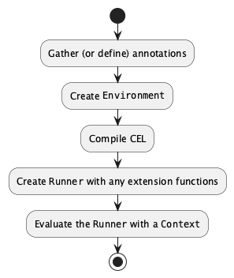

API Reference¶
Detailed reference material for the CEL-Python implementation.
The following modules are described here:
celpy (The
__init__.pyfile defines this.)__main__ (The CLI main application.)
celpy¶
The pure Python implementation of the Common Expression Language, CEL.
This module defines an interface to CEL for integration into other Python applications.
This exposes the Environment used to compile the source module,
the Runner used to evaluate the compiled code,
and the celpy.celtypes module with Python types wrapped to be CEL compatible.
The way these classes are used is as follows:

The explicit decomposition into steps permits two extensions:
Transforming the AST to introduce any optimizations.
Saving the
Runnerinstance to reuse an expression with new inputs.
- class celpy.__init__.Runner(environment: Environment, ast: Tree, functions: Dict[str, Callable[[...], BoolType | BytesType | DoubleType | DurationType | IntType | ListType | MapType | None | StringType | TimestampType | UintType | CELEvalError | Type[BoolType] | Type[BytesType] | Type[DoubleType] | Type[DurationType] | Type[IntType] | Type[ListType] | Type[MapType] | Callable[[...], None] | Type[StringType] | Type[TimestampType] | Type[TypeType] | Type[UintType] | Type[PackageType] | Type[MessageType]]] | None = None)[source]¶
Abstract runner for a compiled CEL program.
The
EnvironmentcreatesRunnerobjects to permit saving a ready-tp-evaluate, compiled CEL expression. ARunnerwill evaluate the AST in the context of a specific activation with the provided variable values.The py:meth:Runner.evaluate method is used to evaluate a CEL expression with a new data context.
As an implementation detail, note that each
Runnersubclass definition includes thetree_node_classattribute. This attribute defines the type for Tree nodes that must be created by thelarkparser. This class information provided to theEnvironmentto tailor thelarkparser. The class named often includes specialized AST features needed by theRunnersubclss.- tree_node_class¶
alias of
Tree
- __init__(environment: Environment, ast: Tree, functions: Dict[str, Callable[[...], BoolType | BytesType | DoubleType | DurationType | IntType | ListType | MapType | None | StringType | TimestampType | UintType | CELEvalError | Type[BoolType] | Type[BytesType] | Type[DoubleType] | Type[DurationType] | Type[IntType] | Type[ListType] | Type[MapType] | Callable[[...], None] | Type[StringType] | Type[TimestampType] | Type[TypeType] | Type[UintType] | Type[PackageType] | Type[MessageType]]] | None = None) None[source]¶
Initialize this
Runnerwith a given AST. The Runner will have annotations take from theEnvironment, plus any unique functions defined here.
- new_activation() Activation[source]¶
Builds a new, working
Activationusing theEnvironmentas defaults. A Context will later be layered onto this for evaluation.This is used internally during evaluation.
- abstract evaluate(activation: Mapping[str, BoolType | BytesType | DoubleType | DurationType | IntType | ListType | MapType | None | StringType | TimestampType | UintType | CELEvalError | Type[BoolType] | Type[BytesType] | Type[DoubleType] | Type[DurationType] | Type[IntType] | Type[ListType] | Type[MapType] | Callable[[...], None] | Type[StringType] | Type[TimestampType] | Type[TypeType] | Type[UintType] | Type[PackageType] | Type[MessageType] | NameContainer | CELFunction]) BoolType | BytesType | DoubleType | DurationType | IntType | ListType | MapType | None | StringType | TimestampType | UintType[source]¶
Given variable definitions in the
celpy.evaluation.Context, evaluate the given AST and return the resulting value.Generally, this should raise an
celpy.evaluation.CELEvalErrorfor most kinds of ordinary problems. It may raise ancelpy.evaluation.CELUnsupportedErrorfor future features that aren’t fully implemented. Any Python exception reflects a serious problem.- Parameters:
activation – a
celpy.evaluation.Contextobject with variable values to use for this evaluation.- Returns:
the computed value
- Raises:
celpy.evaluation.CELEvalErrororcelpy.evaluation.CELUnsupportedErrorfor problems encounterd.
- __abstractmethods__ = frozenset({'evaluate'})¶
- class celpy.__init__.InterpretedRunner(environment: Environment, ast: Tree, functions: Dict[str, Callable[[...], BoolType | BytesType | DoubleType | DurationType | IntType | ListType | MapType | None | StringType | TimestampType | UintType | CELEvalError | Type[BoolType] | Type[BytesType] | Type[DoubleType] | Type[DurationType] | Type[IntType] | Type[ListType] | Type[MapType] | Callable[[...], None] | Type[StringType] | Type[TimestampType] | Type[TypeType] | Type[UintType] | Type[PackageType] | Type[MessageType]]] | None = None)[source]¶
An Adapter for the
celpy.evaluation.Evaluatorclass.- evaluate(context: Mapping[str, BoolType | BytesType | DoubleType | DurationType | IntType | ListType | MapType | None | StringType | TimestampType | UintType | CELEvalError | Type[BoolType] | Type[BytesType] | Type[DoubleType] | Type[DurationType] | Type[IntType] | Type[ListType] | Type[MapType] | Callable[[...], None] | Type[StringType] | Type[TimestampType] | Type[TypeType] | Type[UintType] | Type[PackageType] | Type[MessageType] | NameContainer | CELFunction]) BoolType | BytesType | DoubleType | DurationType | IntType | ListType | MapType | None | StringType | TimestampType | UintType[source]¶
Given variable definitions in the
celpy.evaluation.Context, evaluate the given AST and return the resulting value.Generally, this should raise an
celpy.evaluation.CELEvalErrorfor most kinds of ordinary problems. It may raise ancelpy.evaluation.CELUnsupportedErrorfor future features that aren’t fully implemented. Any Python exception reflects a serious problem.- Parameters:
activation – a
celpy.evaluation.Contextobject with variable values to use for this evaluation.- Returns:
the computed value
- Raises:
celpy.evaluation.CELEvalErrororcelpy.evaluation.CELUnsupportedErrorfor problems encounterd.
- __abstractmethods__ = frozenset({})¶
- class celpy.__init__.CompiledRunner(environment: Environment, ast: TranspilerTree, functions: Dict[str, Callable[[...], BoolType | BytesType | DoubleType | DurationType | IntType | ListType | MapType | None | StringType | TimestampType | UintType | CELEvalError | Type[BoolType] | Type[BytesType] | Type[DoubleType] | Type[DurationType] | Type[IntType] | Type[ListType] | Type[MapType] | Callable[[...], None] | Type[StringType] | Type[TimestampType] | Type[TypeType] | Type[UintType] | Type[PackageType] | Type[MessageType]]] | None = None)[source]¶
An Adapter for the
celpy.evaluation.Transpilerclass.A
celpy.evaluation.Transpilerinstance transforms the AST into Python. It usescompile()to create a code object. The finalevaluate()method usesexec()to evaluate the code object.Note, this requires the
celpy.evaluation.TranspilerTreeclasses instead of the defaultlark.Treeclass.- tree_node_class¶
alias of
TranspilerTree
- __init__(environment: Environment, ast: TranspilerTree, functions: Dict[str, Callable[[...], BoolType | BytesType | DoubleType | DurationType | IntType | ListType | MapType | None | StringType | TimestampType | UintType | CELEvalError | Type[BoolType] | Type[BytesType] | Type[DoubleType] | Type[DurationType] | Type[IntType] | Type[ListType] | Type[MapType] | Callable[[...], None] | Type[StringType] | Type[TimestampType] | Type[TypeType] | Type[UintType] | Type[PackageType] | Type[MessageType]]] | None = None) None[source]¶
Transpile to Python, and use
compile()to create a code object.
- evaluate(context: Mapping[str, BoolType | BytesType | DoubleType | DurationType | IntType | ListType | MapType | None | StringType | TimestampType | UintType | CELEvalError | Type[BoolType] | Type[BytesType] | Type[DoubleType] | Type[DurationType] | Type[IntType] | Type[ListType] | Type[MapType] | Callable[[...], None] | Type[StringType] | Type[TimestampType] | Type[TypeType] | Type[UintType] | Type[PackageType] | Type[MessageType] | NameContainer | CELFunction]) BoolType | BytesType | DoubleType | DurationType | IntType | ListType | MapType | None | StringType | TimestampType | UintType[source]¶
Use
exec()to execute the code object.
- __abstractmethods__ = frozenset({})¶
- class celpy.__init__.Int32Value(value: Any = 0)[source]¶
A wrapper for int32 values.
- static __new__(cls: Type[Int32Value], value: Any = 0) Int32Value[source]¶
TODO: Check range. This seems to matter for protobuf.
- class celpy.__init__.Environment(package: str | None = None, annotations: Dict[str, TypeType | Callable[[...], BoolType | BytesType | DoubleType | DurationType | IntType | ListType | MapType | None | StringType | TimestampType | UintType] | Type[FunctionType]] | None = None, runner_class: Type[Runner] | None = None)[source]¶
Contains the current evaluation context.
CEL integration starts by creating an
Environmentobject. This can be initialized with three optional values:A package name used to resolve variable names. This is not generally required, but is sometimes helpful to provide an explicit namespace for variables.
Type annotations for variables. This helps perform type conversions on external data.
The class of runner to use. By default an
InterpretedRunneris used. The alternative is theCompiledRunner. Detailed performance benchmarks are still pending. Detailed logging is available from the interpreted runner, to help debug external function bindings.
Once the environment has been created, the
Environment.compile()method compiles CEL text to create an AST. This can be helpful for an application that needs to prepare error messages based on the AST. An application can also optimize or transform the AST.The
Environment.program()method packages the AST into aRunnableready for evaluation. At this time, external functions are bound to the CEL expression. TheRunnablecan be evaluated repeatedly with multiple inputs, avoiding the overheads of compiling for each input value.- __init__(package: str | None = None, annotations: Dict[str, TypeType | Callable[[...], BoolType | BytesType | DoubleType | DurationType | IntType | ListType | MapType | None | StringType | TimestampType | UintType] | Type[FunctionType]] | None = None, runner_class: Type[Runner] | None = None) None[source]¶
Create a new environment.
This also increases the default recursion limit to handle the defined minimums for CEL.
- Parameters:
package – An optional package name used to resolve names in an Activation
annotations –
Names with type annotations. There are two flavors of names provided here.
Variable names based on :py:mod:
celtypesFunction names, using
typing.Callable.
runner_class – the class of Runner to use, either InterpretedRunner or CompiledRunner
- compile(text: str) Tree[source]¶
Compiles the CEL source.
Processing starts here by building an AST structure from the CEL text. The AST is exposed for the rare case where an application needs to transform it or analyze it. Generally, it’s best to treat the AST object as opaque, and provide it to the
program()method.This can raise syntax error exceptions. The exceptions contain line and character position information to help create easy-to-use error outputs.
- Parameters:
text – The CEL text to evaluate.
- Returns:
A
lark.Treeobject describing the CEL expression.- Raises:
celpy.celparser.CELParseErrorexceptions for syntax errors.
- program(expr: Tree, functions: Dict[str, Callable[[...], BoolType | BytesType | DoubleType | DurationType | IntType | ListType | MapType | None | StringType | TimestampType | UintType | CELEvalError | Type[BoolType] | Type[BytesType] | Type[DoubleType] | Type[DurationType] | Type[IntType] | Type[ListType] | Type[MapType] | Callable[[...], None] | Type[StringType] | Type[TimestampType] | Type[TypeType] | Type[UintType] | Type[PackageType] | Type[MessageType]]] | None = None) Runner[source]¶
Transforms the AST into an executable
Runnerobject. This will bind the given functions into the runnable object.The resulting object has a
Runner.evaluate()method that applies the CEL structure to input data to compute the final result.
__main__¶
The CLI interface to celpy.
This parses the command-line options. It also offers an interactive REPL.
- celpy.__main__.arg_type_value(text: str) Tuple[str, TypeType | Callable[[...], BoolType | BytesType | DoubleType | DurationType | IntType | ListType | MapType | None | StringType | TimestampType | UintType] | Type[FunctionType], BoolType | BytesType | DoubleType | DurationType | IntType | ListType | MapType | None | StringType | TimestampType | UintType][source]¶
Decompose
-a name:type=valueargument into a useful triple.Also accept
-a name:type. This will findnamein the environment and convert to the requested type.Also accepts
-a name. This will findnamein the environment and treat it as a string.Currently, names do not reflect package naming. An environment can be a package, and the activation can include variables that are also part of the package. This is not supported via the CLI.
Types can be celtypes class names or TYPE_NAME or PROTOBUF_TYPE
TYPE_NAME : "int64_value" | "null_value" | "uint64_value" | "double_value" | "bool_value" | "string_value" | "bytes_value" | "number_value" PROTOBUF_TYPE : "single_int64" | "single_int32" | "single_uint64" | "single_uint32" | "single_sint64" | "single_sint32" | "single_fixed64" | "single_fixed32" | "single_sfixed32" | "single_sfixed64" | "single_float" | "single_double" | "single_bool" | "single_string" | "single_bytes" | "single_duration" | "single_timestamp"
- Parameters:
text – Argument value
- Returns:
Tuple with name, annotation, and resulting object.
- celpy.__main__.get_options(argv: List[str] | None = None) Namespace[source]¶
Parses command-line arguments.
- celpy.__main__.stat(path: Path | str) MapType | None[source]¶
This function is added to the CLI to permit file-system interrogation.
- class celpy.__main__.CEL_REPL(completekey='tab', stdin=None, stdout=None)[source]¶
- prompt = 'CEL> '¶
- intro = 'Enter an expression to have it evaluated.'¶
- logger = <Logger celpy.repl (WARNING)>¶
- cel_eval(text: str) BoolType | BytesType | DoubleType | DurationType | IntType | ListType | MapType | None | StringType | TimestampType | UintType[source]¶
- do_set(args: str) bool[source]¶
Set variable expression
Evaluates the expression, saves the result as the given variable in the current activation.
- do_exit(args: str) bool¶
Quits from the REPL.
- do_bye(args: str) bool¶
Quits from the REPL.
- do_EOF(args: str) bool¶
Quits from the REPL.
- celpy.__main__.process_json_doc(display: Callable[[BoolType | BytesType | DoubleType | DurationType | IntType | ListType | MapType | None | StringType | TimestampType | UintType | CELEvalError | Type[BoolType] | Type[BytesType] | Type[DoubleType] | Type[DurationType] | Type[IntType] | Type[ListType] | Type[MapType] | Callable[[...], None] | Type[StringType] | Type[TimestampType] | Type[TypeType] | Type[UintType] | Type[PackageType] | Type[MessageType]], None], prgm: Runner, activation: Dict[str, Any], variable: str, document: str, boolean_to_status: bool = False) int[source]¶
Process a single JSON document. Either one line of an NDJSON stream or the only document in slurp mode. We assign it to the variable “jq”. This variable can be the package name, allowing
.name) to work. Or. It can be left as a variable, allowingjqandjq.map(x, x*2)to work.Returns status code 0 for success, 3 for failure.
- celpy.__main__.main(argv: List[str] | None = None) int[source]¶
Given options from the command-line, execute the CEL expression.
With –null-input option, only –arg and expr matter.
Without –null-input, JSON documents are read from STDIN, following ndjson format.
With the –slurp option, it reads one JSON from stdin, spread over multiple lines.
- If “–json-package” is used, each JSON document becomes a package, and
top-level dictionary keys become valid
.nameexpressions. Otherwise, “–json-object” is the default, and each JSON document is assigned to a variable. The default name is “jq” to allow expressions that are similar tojqbut with a “jq” prefix.
adapter¶
Adapters to convert some Python-native types into CEL structures.
Currently, atomic Python objects have direct use of types in celpy.celtypes.
Non-atomic Python objects are characterized by JSON and Protobuf messages. This module has functions to convert JSON objects to CEL.
A proper protobuf decoder is TBD.
A more sophisticated type injection capability may be needed to permit
additional types or extensions to celpy.celtypes.
- class celpy.adapter.CELJSONEncoder(*, skipkeys=False, ensure_ascii=True, check_circular=True, allow_nan=True, sort_keys=False, indent=None, separators=None, default=None)[source]¶
An Encoder to export CEL objects as JSON text.
This is not a reversible transformation. Some things are coerced to strings without any more detailed type marker. Specifically timestamps, durations, and bytes.
- static to_python(cel_object: BoolType | BytesType | DoubleType | DurationType | IntType | ListType | MapType | None | StringType | TimestampType | UintType) BoolType | BytesType | DoubleType | DurationType | IntType | ListType | MapType | None | StringType | TimestampType | UintType | List[Any] | Dict[Any, Any] | bool[source]¶
Recursive walk through the CEL object, replacing BoolType with native bool instances. This lets the
jsonmodule correctly represent the obects with JSONtrueandfalse.This will also replace ListType and MapType with native
listanddict. All other CEL objects will be left intact. This creates an intermediate hybrid beast that’s not quite aceltypes.Valuebecause a few things have been replaced.
- encode(cel_object: BoolType | BytesType | DoubleType | DurationType | IntType | ListType | MapType | None | StringType | TimestampType | UintType) str[source]¶
Override built-in encode to create proper Python
boolobjects.
- default(cel_object: BoolType | BytesType | DoubleType | DurationType | IntType | ListType | MapType | None | StringType | TimestampType | UintType) Dict[str, Any] | List[Any] | bool | float | int | str | None[source]¶
Implement this method in a subclass such that it returns a serializable object for
o, or calls the base implementation (to raise aTypeError).For example, to support arbitrary iterators, you could implement default like this:
def default(self, o): try: iterable = iter(o) except TypeError: pass else: return list(iterable) # Let the base class default method raise the TypeError return JSONEncoder.default(self, o)
- class celpy.adapter.CELJSONDecoder(*, object_hook=None, parse_float=None, parse_int=None, parse_constant=None, strict=True, object_pairs_hook=None)[source]¶
An Encoder to import CEL objects from JSON to the extent possible.
This does not handle non-JSON types in any form. Coercion from string to TimestampType or DurationType or BytesType is handled by celtype constructors.
- celpy.adapter.json_to_cel(document: Dict[str, Any] | List[Any] | bool | float | int | str | None) BoolType | BytesType | DoubleType | DurationType | IntType | ListType | MapType | None | StringType | TimestampType | UintType[source]¶
Converts parsed JSON object from Python to CEL to the extent possible.
Note that it’s difficult to distinguish strings which should be timestamps or durations. Using the
jsonpackageobjecthookcan help do these conversions.python
CEL
bool
float
int
str
None
None
tuple, list
dict
datetime.datetime
datetime.timedelta
- Parameters:
document – A JSON document.
- Returns:
celpy.celtypes.Value.- Raises:
internal
ValueErrororTypeErrorfor failed conversions.
Example:
>>> from pprint import pprint >>> from celpy.adapter import json_to_cel >>> doc = json.loads('["str", 42, 3.14, null, true, {"hello": "world"}]') >>> cel = json_to_cel(doc) >>> pprint(cel) ListType([StringType('str'), IntType(42), DoubleType(3.14), None, BoolType(True), MapType({StringType('hello'): StringType('world')})])
c7nlib¶
Functions for C7N features when evaluating CEL expressions.
These functions provide a mapping between C7N features and CEL.
These functions are exposed by the global FUNCTIONS dictionary that is provided
to the CEL evaluation run-time to provide necessary C7N features.
The functions rely on implementation details in the CELFilter class.
The API¶
A C7N implementation can use CEL expressions and the c7nlib module as follows:
class CELFilter(c7n.filters.core.Filter):
decls = {
"resource": celpy.celtypes.MapType,
"now": celpy.celtypes.TimestampType,
"event": celpy.celtypes.MapType,
}
decls.update(celpy.c7nlib.DECLARATIONS)
def __init__(self, expr: str) -> None:
self.expr = expr
def validate(self) -> None:
cel_env = celpy.Environment(
annotations=self.decls,
runner_class=c7nlib.C7N_Interpreted_Runner)
cel_ast = cel_env.compile(self.expr)
self.pgm = cel_env.program(cel_ast, functions=celpy.c7nlib.FUNCTIONS)
def process(self,
resources: Iterable[celpy.celtypes.MapType]) -> Iterator[celpy.celtypes.MapType]:
now = datetime.datetime.utcnow()
for resource in resources:
with C7NContext(filter=the_filter):
cel_activation = {
"resource": celpy.json_to_cel(resource),
"now": celpy.celtypes.TimestampType(now),
}
if self.pgm.evaluate(cel_activation):
yield resource
The celpy.c7nlib library of functions is bound into the CEL celpy.__init__.Runner object that’s built from the AST.
Several variables will be required in the celpy.evaluation.Activation for use by most CEL expressions
that implement C7N filters:
- resource:
A JSON document describing a cloud resource.
- now:
The current timestamp.
- event:
May be needed; it should be a JSON document describing an AWS CloudWatch event.
The type: value Features¶
The core value features of C7N require a number of CEL extensions.
glob(string, pattern)()uses Python fnmatch rules. This implementsop: glob.difference(list, list)()creates intermediate sets and computes the difference as a boolean value. Any difference is True. This implementsop: difference.intersect(list, list)()creats intermediate sets and computes the intersection as a boolean value. Any interection is True. This implementsop: intersect.normalize(string)()supports normalized comparison between strings. In this case, it means lower cased and trimmed. This implementsvalue_type: normalize.net.cidr_contains()checks to see if a given CIDR block contains a specific address. See https://www.openpolicyagent.org/docs/latest/policy-reference/#net.net.cidr_size()extracts the prefix length of a parsed CIDR block.version()usesdisutils.version.LooseVersionto compare version strings.resource_count()function. This is TBD.
The type: value_from features¶
This relies on value_from() and jmes_path_map() functions
In context, it looks like this:
value_from("s3://c7n-resources/exemptions.json", "json")
.jmes_path_map('exemptions.ec2.rehydration.["IamInstanceProfile.Arn"][].*[].*[]')
.contains(resource["IamInstanceProfile"]["Arn"])
The value_from() function reads values from a given URI.
A full URI for an S3 bucket.
A full URI for a server that supports HTTPS GET requests.
If a format is given, this is used, otherwise it’s based on the suffix of the path.
The jmes_path_map() function compiles and applies a JMESPath
expression against each item in the collection to create a
new collection. To an extent, this repeats functionality
from the map() macro.
Additional Functions¶
A number of C7N subclasses of Filter provide additional features. There are
at least 70-odd functions that are expressed or implied by these filters.
Because the CEL expressions are always part of a CELFilter, all of these
additional C7N features need to be transformed into “mixins” that are implemented
in two places. The function is part of the legacy subclass of Filter,
and the function is also part of CELFilter.
class InstanceImageMixin:
# from :py:class:`InstanceImageBase` refactoring
def get_instance_image(self):
pass
class RelatedResourceMixin:
# from :py:class:`RelatedResourceFilter` mixin
def get_related_ids(self):
pass
def get_related(self):
pass
class CredentialReportMixin:
# from :py:class:`c7n.resources.iam.CredentialReport` filter.
def get_credential_report(self):
pass
class ResourceKmsKeyAliasMixin:
# from :py:class:`c7n.resources.kms.ResourceKmsKeyAlias`
def get_matching_aliases(self, resource):
pass
class CrossAccountAccessMixin:
# from :py:class:`c7n.filters.iamaccessfilter.CrossAccountAccessFilter`
def get_accounts(self, resource):
pass
def get_vpcs(self, resource):
pass
def get_vpces(self, resource):
pass
def get_orgids(self, resource):
pass
# from :py:class:`c7n.resources.secretsmanager.CrossAccountAccessFilter`
def get_resource_policy(self, resource):
pass
class SNSCrossAccountMixin:
# from :py:class:`c7n.resources.sns.SNSCrossAccount`
def get_endpoints(self, resource):
pass
def get_protocols(self, resource):
pass
class ImagesUnusedMixin:
# from :py:class:`c7n.resources.ami.ImageUnusedFilter`
def _pull_ec2_images(self, resource):
pass
def _pull_asg_images(self, resource):
pass
class SnapshotUnusedMixin:
# from :py:class:`c7n.resources.ebs.SnapshotUnusedFilter`
def _pull_asg_snapshots(self, resource):
pass
def _pull_ami_snapshots(self, resource):
pass
class IamRoleUsageMixin:
# from :py:class:`c7n.resources.iam.IamRoleUsage`
def service_role_usage(self, resource):
pass
def instance_profile_usage(self, resource):
pass
class SGUsageMixin:
# from :py:class:`c7n.resources.vpc.SGUsage`
def scan_groups(self, resource):
pass
class IsShieldProtectedMixin:
# from :py:mod:`c7n.resources.shield`
def get_type_protections(self, resource):
pass
class ShieldEnabledMixin:
# from :py:class:`c7n.resources.account.ShieldEnabled`
def account_shield_subscriptions(self, resource):
pass
class CELFilter(
InstanceImageMixin, RelatedResourceMixin, CredentialReportMixin,
ResourceKmsKeyAliasMixin, CrossAccountAccessMixin, SNSCrossAccountMixin,
ImagesUnusedMixin, SnapshotUnusedMixin, IamRoleUsageMixin, SGUsageMixin,
Filter,
):
'''Container for functions used by c7nlib to expose data to CEL'''
def __init__(self, data, manager) -> None:
super().__init__(data, manager)
assert data["type"].lower() == "cel"
self.expr = data["expr"]
self.parser = c7n.filters.offhours.ScheduleParser()
def validate(self):
pass # See above example
def process(self, resources):
pass # See above example
This is not the complete list. See the tests/test_c7nlib.py for the celfilter_instance
fixture which contains all of the functions required.
C7N Context Object¶
A number of the functions require access to C7N features that are not simply part of the resource being filtered. There are two alternative ways to handle this dependency:
A global C7N context object that has the current
CELFilterproviding access to C7N internals.A
C7Nargument to the functions that need C7N access. This would be provided in the activation context for CEL.
To keep the library functions looking simple, the module global C7N is used.
This avoids introducing a non-CEL parameter to the celpy.c7nlib functions.
The C7N context object contains the following attributes:
- filter:
The original C7N
Filterobject. This provides access to the resource manager. It can be used to manage supplemental queries using C7N caches and other resource management.
This is set by the C7NContext prior to CEL evaluation.
Name Resolution¶
Note that names are not resolved via a lookup in the program object,
an instance of the celpy.Runner class. To keep these functions
simple, the runner is not part of the run-time, and name resolution
will appear to be “hard-wrired” among these functions.
This is rarely an issue, since most of these functions are independent.
The value_from() function relies on text_from() and parse_text().
Changing either of these functions with an override won’t modify the behavior
of value_from().
- class celpy.c7nlib.C7NContext(filter: Any)[source]¶
Saves current C7N filter for use by functions in this module.
This is essential for making C7N filter available to some of these functions.
with C7NContext(filter): cel_prgm.evaluate(cel_activation)
- celpy.c7nlib.key(source: ListType, target: StringType) BoolType | BytesType | DoubleType | DurationType | IntType | ListType | MapType | None | StringType | TimestampType | UintType[source]¶
The C7N shorthand
tag:Namedoesn’t translate well to CEL. It extracts a single value from a sequence of objects with a{"Key": x, "Value": y}structure; specifically, the value forywhenx == "Name".This function locate a particular “Key”: target within a list of {“Key”: x, “Value”, y} items, returning the y value if one is found, null otherwise.
In effect, the
key()function:resource["Tags"].key("Name")["Value"]
is somewhat like:
resource["Tags"].filter(x, x["Key"] == "Name")[0]
But the
key()function doesn’t raise an exception if the key is not found, instead it returns None.We might want to generalize this into a
first()reduction macro.resource["Tags"].first(x, x["Key"] == "Name" ? x["Value"] : null, null)This macro returns the first non-null value or the default (which can benull.)
- celpy.c7nlib.glob(text: StringType, pattern: StringType) BoolType[source]¶
Compare a string with a pattern.
While
"*.py".glob(some_string)seems logical because the pattern the more persistent object, this seems to cause confusion.We use
some_string.glob("*.py")to express a regex-like rule. This parallels the CEL .matches() method.We also support
glob(some_string, "*.py").
- celpy.c7nlib.difference(left: ListType, right: ListType) BoolType[source]¶
Compute the difference between two lists. This is ordered set difference: left - right. It’s true if the result is non-empty: there is an item in the left, not present in the right. It’s false if the result is empty: the lists are the same.
- celpy.c7nlib.intersect(left: ListType, right: ListType) BoolType[source]¶
Compute the intersection between two lists. It’s true if the result is non-empty: there is an item in both lists. It’s false if the result is empty: there is no common item between the lists.
- celpy.c7nlib.normalize(string: StringType) StringType[source]¶
Normalize a string.
- celpy.c7nlib.parse_cidr(value: str) None | IPv4Network | IPv4Address[source]¶
Process cidr ranges.
This is a union of types outside CEL.
It appears to be Union[None, IPv4Network, ipaddress.IPv4Address]
- celpy.c7nlib.size_parse_cidr(value: StringType) IntType | None[source]¶
CIDR prefixlen value
- class celpy.c7nlib.ComparableVersion(version: str)[source]¶
The old LooseVersion could fail on comparing present strings, used in the value as shorthand for certain options.
The new Version doesn’t fail as easily.
- __hash__ = None¶
- celpy.c7nlib.version(value: StringType) BoolType | BytesType | DoubleType | DurationType | IntType | ListType | MapType | None | StringType | TimestampType | UintType[source]¶
- celpy.c7nlib.present(value: StringType) BoolType | BytesType | DoubleType | DurationType | IntType | ListType | MapType | None | StringType | TimestampType | UintType[source]¶
- celpy.c7nlib.absent(value: StringType) BoolType | BytesType | DoubleType | DurationType | IntType | ListType | MapType | None | StringType | TimestampType | UintType[source]¶
- celpy.c7nlib.text_from(url: StringType) BoolType | BytesType | DoubleType | DurationType | IntType | ListType | MapType | None | StringType | TimestampType | UintType[source]¶
Read raw text from a URL. This can be expanded to accept S3 or other URL’s.
- celpy.c7nlib.parse_text(source_text: StringType, format: StringType) BoolType | BytesType | DoubleType | DurationType | IntType | ListType | MapType | None | StringType | TimestampType | UintType[source]¶
Parse raw text using a given format.
- celpy.c7nlib.value_from(url: StringType, format: StringType | None = None) BoolType | BytesType | DoubleType | DurationType | IntType | ListType | MapType | None | StringType | TimestampType | UintType[source]¶
Read values from a URL.
First, do
text_from()to read the source. Then, doparse_text()to parse the source, if needed.This makes the format optional, and deduces it from the URL’s path information.
C7N will generally replace this with a function that leverages a more sophisticated
c7n.resolver.ValuesFrom.
- celpy.c7nlib.jmes_path(source_data: BoolType | BytesType | DoubleType | DurationType | IntType | ListType | MapType | None | StringType | TimestampType | UintType, path_source: StringType) BoolType | BytesType | DoubleType | DurationType | IntType | ListType | MapType | None | StringType | TimestampType | UintType[source]¶
Apply JMESPath to an object read from from a URL.
- celpy.c7nlib.jmes_path_map(source_data: ListType, path_source: StringType) ListType[source]¶
Apply JMESPath to a each object read from from a URL. This is for ndjson, nljson and jsonl files.
- celpy.c7nlib.marked_key(source: ListType, target: StringType) BoolType | BytesType | DoubleType | DurationType | IntType | ListType | MapType | None | StringType | TimestampType | UintType[source]¶
Examines a list of {“Key”: text, “Value”: text} mappings looking for the given Key value.
Parses a
message:action@action_datevalue into a mapping {“message”: message, “action”: action, “action_date”: action_date}If no Key or no Value or the Value isn’t the right structure, the result is a null.
- celpy.c7nlib.image(resource: MapType) BoolType | BytesType | DoubleType | DurationType | IntType | ListType | MapType | None | StringType | TimestampType | UintType[source]¶
Reach into C7N to get the image details for this EC2 or ASG resource.
Minimally, the creation date is transformed into a CEL timestamp. We may want to slightly generalize this to json_to_cell() the entire Image object.
The following may be usable, but it seems too complex:
C7N.filter.prefetch_instance_images(C7N.policy.resources) image = C7N.filter.get_instance_image(resource["ImageId"]) return json_to_cel(image)
- celpy.c7nlib.get_raw_metrics(request: MapType) BoolType | BytesType | DoubleType | DurationType | IntType | ListType | MapType | None | StringType | TimestampType | UintType[source]¶
Reach into C7N and make a statistics request using the current C7N filter object.
The
requestparameter is the request object that is passed through to AWS via the current C7N filter’s manager. The request is a Mapping with the following keys and values:get_raw_metrics({ "Namespace": "AWS/EC2", "MetricName": "CPUUtilization", "Dimensions": {"Name": "InstanceId", "Value": resource.InstanceId}, "Statistics": ["Average"], "StartTime": now - duration("4d"), "EndTime": now, "Period": duration("86400s") })
The request is passed through to AWS more-or-less directly. The result is a CEL list of values for then requested statistic. A
.map()macro can be used to compute additional details. An.exists()macro can filter the data to look for actionable values.We would prefer to refactor C7N and implement this with code something like this:
C7N.filter.prepare_query(C7N.policy.resources) data = C7N.filter.get_resource_statistics(client, resource) return json_to_cel(data)
- celpy.c7nlib.get_metrics(resource: MapType, request: MapType) BoolType | BytesType | DoubleType | DurationType | IntType | ListType | MapType | None | StringType | TimestampType | UintType[source]¶
Reach into C7N and make a statistics request using the current C7N filter.
This builds a request object that is passed through to AWS via the
get_raw_metrics()function.The
requestparameter is a Mapping with the following keys and values:resource.get_metrics({"MetricName": "CPUUtilization", "Statistic": "Average", "StartTime": now - duration("4d"), "EndTime": now, "Period": duration("86400s")} ).exists(m, m < 30)
The namespace is derived from the
C7N.policy. The dimensions are derived from theC7N.fiter.model.
- celpy.c7nlib.get_raw_health_events(request: MapType) BoolType | BytesType | DoubleType | DurationType | IntType | ListType | MapType | None | StringType | TimestampType | UintType[source]¶
Reach into C7N and make a health-events request using the current C7N filter.
The
requestparameter is the filter object that is passed through to AWS via the current C7N filter’s manager. The request is a List of AWS health events.get_raw_health_events({ "services": ["ELASTICFILESYSTEM"], "regions": ["us-east-1", "global"], "eventStatusCodes": ['open', 'upcoming'], })
- celpy.c7nlib.get_health_events(resource: MapType, statuses: List[BoolType | BytesType | DoubleType | DurationType | IntType | ListType | MapType | None | StringType | TimestampType | UintType] | None = None) BoolType | BytesType | DoubleType | DurationType | IntType | ListType | MapType | None | StringType | TimestampType | UintType[source]¶
Reach into C7N and make a health-event request using the current C7N filter.
This builds a request object that is passed through to AWS via the
get_raw_health_events()function.
Reach into C7N and make a get_related_ids() request using the current C7N filter.
Reach into C7N and make a get_related_sgs() request using the current C7N filter.
Reach into C7N and make a get_related_subnets() request using the current C7N filter.
Reach into C7N and make a get_related_nat_gateways() request using the current C7N filter.
Reach into C7N and make a get_related_igws() request using the current C7N filter.
Reach into C7N and make a get_related_security_configs() request using the current C7N filter.
Reach into C7N and make a get_related_vpc() request using the current C7N filter.
Reach into C7N and make a get_related_kms_keys() request using the current C7N filter.
- celpy.c7nlib.security_group(security_group_id: MapType) BoolType | BytesType | DoubleType | DurationType | IntType | ListType | MapType | None | StringType | TimestampType | UintType[source]¶
Reach into C7N and make a get_related() request using the current C7N filter to get the security group.
- celpy.c7nlib.subnet(subnet_id: BoolType | BytesType | DoubleType | DurationType | IntType | ListType | MapType | None | StringType | TimestampType | UintType) BoolType | BytesType | DoubleType | DurationType | IntType | ListType | MapType | None | StringType | TimestampType | UintType[source]¶
Reach into C7N and make a get_related() request using the current C7N filter to get the subnet.
- celpy.c7nlib.flow_logs(resource: MapType) BoolType | BytesType | DoubleType | DurationType | IntType | ListType | MapType | None | StringType | TimestampType | UintType[source]¶
Reach into C7N and locate the flow logs using the current C7N filter.
- celpy.c7nlib.vpc(vpc_id: BoolType | BytesType | DoubleType | DurationType | IntType | ListType | MapType | None | StringType | TimestampType | UintType) BoolType | BytesType | DoubleType | DurationType | IntType | ListType | MapType | None | StringType | TimestampType | UintType[source]¶
Reach into C7N and make a
get_related()request using the current C7N filter to get the VPC details.
- celpy.c7nlib.subst(jmes_path: StringType) StringType[source]¶
Reach into C7N and build a set of substitutions to replace text in a JMES path.
This is based on how
c7n.resolver.ValuesFromworks. There are two possible substitution values:account_id
region
- Parameters:
jmes_path – the source
- Returns:
A JMES with values replaced.
- celpy.c7nlib.credentials(resource: MapType) BoolType | BytesType | DoubleType | DurationType | IntType | ListType | MapType | None | StringType | TimestampType | UintType[source]¶
Reach into C7N and make a get_related() request using the current C7N filter to get the IAM-role credential details.
See
c7n.resources.iam.CredentialReportfilter. The get_credential_report() function does what we need.
- celpy.c7nlib.kms_alias(vpc_id: BoolType | BytesType | DoubleType | DurationType | IntType | ListType | MapType | None | StringType | TimestampType | UintType) BoolType | BytesType | DoubleType | DurationType | IntType | ListType | MapType | None | StringType | TimestampType | UintType[source]¶
Reach into C7N and make a get_matching_aliases() request using the current C7N filter to get the alias.
See
c7n.resources.kms.ResourceKmsKeyAlias. The get_matching_aliases() function does what we need.
- celpy.c7nlib.kms_key(key_id: BoolType | BytesType | DoubleType | DurationType | IntType | ListType | MapType | None | StringType | TimestampType | UintType) BoolType | BytesType | DoubleType | DurationType | IntType | ListType | MapType | None | StringType | TimestampType | UintType[source]¶
Reach into C7N and make a
get_related()request using the current C7N filter to get the key. We’re looking for the c7n.resources.kms.Key resource manager to get the related key.
- celpy.c7nlib.resource_schedule(tag_value: BoolType | BytesType | DoubleType | DurationType | IntType | ListType | MapType | None | StringType | TimestampType | UintType) BoolType | BytesType | DoubleType | DurationType | IntType | ListType | MapType | None | StringType | TimestampType | UintType[source]¶
Reach into C7N and use the the
c7n.filters.offhours.ScheduleParserclass to examine the tag’s value, the current time, and return a True/False. This parser is the parser value of thec7n.filters.offhours.Timefilter class. Using the filter’s parser.parse(value) provides needed structure.The filter.parser.parse(value) will transform text of the Tag value into a dictionary. This is further transformed to something we can use in CEL.
From this
off=[(M-F,21),(U,18)];on=[(M-F,6),(U,10)];tz=pt
C7N ScheduleParser produces this
{ off: [ { days: [1, 2, 3, 4, 5], hour: 21 }, { days: [0], hour: 18 } ], on: [ { days: [1, 2, 3, 4, 5], hour: 6 }, { days: [0], hour: 10 } ], tz: "pt" }
For CEL, we need this
{ off: [ { days: [1, 2, 3, 4, 5], hour: 21, tz: "pt" }, { days: [0], hour: 18, tz: "pt" } ], on: [ { days: [1, 2, 3, 4, 5], hour: 6, tz: "pt" }, { days: [0], hour: 10, tz: "pt" } ], }
This lets a CEL expression use
key("maid_offhours").resource_schedule().off.exists(s, now.getDayOfWeek(s.tz) in s.days && now.getHour(s.tz) == s.hour)
- celpy.c7nlib.get_accounts(resource: MapType) BoolType | BytesType | DoubleType | DurationType | IntType | ListType | MapType | None | StringType | TimestampType | UintType[source]¶
Reach into C7N filter and get accounts for a given resource. Used by resources like AMI’s, log-groups, ebs-snapshot, etc.
- celpy.c7nlib.get_vpcs(resource: MapType) BoolType | BytesType | DoubleType | DurationType | IntType | ListType | MapType | None | StringType | TimestampType | UintType[source]¶
Reach into C7N filter and get vpcs for a given resource. Used by resources like AMI’s, log-groups, ebs-snapshot, etc.
- celpy.c7nlib.get_vpces(resource: MapType) BoolType | BytesType | DoubleType | DurationType | IntType | ListType | MapType | None | StringType | TimestampType | UintType[source]¶
Reach into C7N filter and get vpces for a given resource. Used by resources like AMI’s, log-groups, ebs-snapshot, etc.
- celpy.c7nlib.get_orgids(resource: MapType) BoolType | BytesType | DoubleType | DurationType | IntType | ListType | MapType | None | StringType | TimestampType | UintType[source]¶
Reach into C7N filter and get orgids for a given resource. Used by resources like AMI’s, log-groups, ebs-snapshot, etc.
- celpy.c7nlib.get_endpoints(resource: MapType) BoolType | BytesType | DoubleType | DurationType | IntType | ListType | MapType | None | StringType | TimestampType | UintType[source]¶
For sns resources
- celpy.c7nlib.get_protocols(resource: MapType) BoolType | BytesType | DoubleType | DurationType | IntType | ListType | MapType | None | StringType | TimestampType | UintType[source]¶
For sns resources
- celpy.c7nlib.get_key_policy(resource: MapType) BoolType | BytesType | DoubleType | DurationType | IntType | ListType | MapType | None | StringType | TimestampType | UintType[source]¶
For kms resources
- celpy.c7nlib.get_resource_policy(resource: MapType) BoolType | BytesType | DoubleType | DurationType | IntType | ListType | MapType | None | StringType | TimestampType | UintType[source]¶
Reach into C7N filter and get the resource policy for a given resource. Used by resources like AMI’s, log-groups, ebs-snapshot, etc.
- celpy.c7nlib.describe_subscription_filters(resource: MapType) BoolType | BytesType | DoubleType | DurationType | IntType | ListType | MapType | None | StringType | TimestampType | UintType[source]¶
For log-groups resources.
- celpy.c7nlib.describe_db_snapshot_attributes(resource: MapType) BoolType | BytesType | DoubleType | DurationType | IntType | ListType | MapType | None | StringType | TimestampType | UintType[source]¶
For rds-snapshot and ebs-snapshot resources
- celpy.c7nlib.arn_split(arn: StringType, field: StringType) BoolType | BytesType | DoubleType | DurationType | IntType | ListType | MapType | None | StringType | TimestampType | UintType[source]¶
Parse an ARN, removing a partivular field. The field name must one one of “partition”, “service”, “region”, “account-id”, “resource-type”, “resource-id” In the case of a
resource-type/resource-idpath, this will be a “resource-id” value, and there will be no “resource-type”.Examples formats
arn:partition:service:region:account-id:resource-idarn:partition:service:region:account-id:resource-type/resource-idarn:partition:service:region:account-id:resource-type:resource-id
- celpy.c7nlib.all_images() BoolType | BytesType | DoubleType | DurationType | IntType | ListType | MapType | None | StringType | TimestampType | UintType[source]¶
Depends on
CELFilter._pull_ec2_images()andCELFilter._pull_asg_images()See
c7n.resources.ami.ImageUnusedFilter
- celpy.c7nlib.all_snapshots() BoolType | BytesType | DoubleType | DurationType | IntType | ListType | MapType | None | StringType | TimestampType | UintType[source]¶
Depends on
CELFilter._pull_asg_snapshots()andCELFilter._pull_ami_snapshots()See
c7n.resources.ebs.SnapshotUnusedFilter
- celpy.c7nlib.all_launch_configuration_names() BoolType | BytesType | DoubleType | DurationType | IntType | ListType | MapType | None | StringType | TimestampType | UintType[source]¶
Depends on
CELFilter.manager.get_launch_configuration_names()See
c7n.resources.asg.UnusedLaunchConfig
- celpy.c7nlib.all_service_roles() BoolType | BytesType | DoubleType | DurationType | IntType | ListType | MapType | None | StringType | TimestampType | UintType[source]¶
Depends on
CELFilter.service_role_usage()See
c7n.resources.iam.UnusedIamRole
- celpy.c7nlib.all_instance_profiles() BoolType | BytesType | DoubleType | DurationType | IntType | ListType | MapType | None | StringType | TimestampType | UintType[source]¶
Depends on
CELFilter.instance_profile_usage()See
c7n.resources.iam.UnusedInstanceProfiles
- celpy.c7nlib.all_dbsubenet_groups() BoolType | BytesType | DoubleType | DurationType | IntType | ListType | MapType | None | StringType | TimestampType | UintType[source]¶
Depends on
CELFilter.get_dbsubnet_group_used()See
c7n.resources.rds.UnusedRDSSubnetGroup
- celpy.c7nlib.all_scan_groups() BoolType | BytesType | DoubleType | DurationType | IntType | ListType | MapType | None | StringType | TimestampType | UintType[source]¶
Depends on
CELFilter.scan_groups()See
c7n.resources.vpc.UnusedSecurityGroup
- celpy.c7nlib.get_access_log(resource: MapType) BoolType | BytesType | DoubleType | DurationType | IntType | ListType | MapType | None | StringType | TimestampType | UintType[source]¶
Depends on
CELFilter.resources()See
c7n.resources.elb.IsNotLoggingFilterandc7n.resources.elb.IsLoggingFilter.
- celpy.c7nlib.get_load_balancer(resource: MapType) BoolType | BytesType | DoubleType | DurationType | IntType | ListType | MapType | None | StringType | TimestampType | UintType[source]¶
Depends on
CELFilter.resources()See
c7n.resources.appelb.IsNotLoggingFilterandc7n.resources.appelb.IsLoggingFilter.
- celpy.c7nlib.shield_protection(resource: MapType) BoolType | BytesType | DoubleType | DurationType | IntType | ListType | MapType | None | StringType | TimestampType | UintType[source]¶
Depends on the
c7n.resources.shield.IsShieldProtected.process()method. This needs to be refactored and renamed to avoid collisions with otherprocess()variants.Applies to most resource types.
- celpy.c7nlib.shield_subscription(resource: MapType) BoolType | BytesType | DoubleType | DurationType | IntType | ListType | MapType | None | StringType | TimestampType | UintType[source]¶
Depends on
c7n.resources.account.ShieldEnabled.process()method. This needs to be refactored and renamed to avoid collisions with otherprocess()variants.Applies to account resources only.
- celpy.c7nlib.web_acls(resource: MapType) BoolType | BytesType | DoubleType | DurationType | IntType | ListType | MapType | None | StringType | TimestampType | UintType[source]¶
Depends on
c7n.resources.cloudfront.IsWafEnabled.process()method. This needs to be refactored and renamed to avoid collisions with otherprocess()variants.
- class celpy.c7nlib.C7N_Interpreted_Runner(environment: Environment, ast: Tree, functions: Dict[str, Callable[[...], BoolType | BytesType | DoubleType | DurationType | IntType | ListType | MapType | None | StringType | TimestampType | UintType | CELEvalError | Type[BoolType] | Type[BytesType] | Type[DoubleType] | Type[DurationType] | Type[IntType] | Type[ListType] | Type[MapType] | Callable[[...], None] | Type[StringType] | Type[TimestampType] | Type[TypeType] | Type[UintType] | Type[PackageType] | Type[MessageType]]] | None = None)[source]¶
Extends the Evaluation to introduce the C7N CELFilter instance into the evaluation.
The variable is global to allow the functions to have the simple-looking argument values that CEL expects. This allows a function in this module to reach outside CEL for access to C7N’s caches.
- evaluate(context: Mapping[str, BoolType | BytesType | DoubleType | DurationType | IntType | ListType | MapType | None | StringType | TimestampType | UintType | CELEvalError | Type[BoolType] | Type[BytesType] | Type[DoubleType] | Type[DurationType] | Type[IntType] | Type[ListType] | Type[MapType] | Callable[[...], None] | Type[StringType] | Type[TimestampType] | Type[TypeType] | Type[UintType] | Type[PackageType] | Type[MessageType] | NameContainer | CELFunction], filter: Any | None = None) BoolType | BytesType | DoubleType | DurationType | IntType | ListType | MapType | None | StringType | TimestampType | UintType[source]¶
Given variable definitions in the
celpy.evaluation.Context, evaluate the given AST and return the resulting value.Generally, this should raise an
celpy.evaluation.CELEvalErrorfor most kinds of ordinary problems. It may raise ancelpy.evaluation.CELUnsupportedErrorfor future features that aren’t fully implemented. Any Python exception reflects a serious problem.- Parameters:
activation – a
celpy.evaluation.Contextobject with variable values to use for this evaluation.- Returns:
the computed value
- Raises:
celpy.evaluation.CELEvalErrororcelpy.evaluation.CELUnsupportedErrorfor problems encounterd.
- __abstractmethods__ = frozenset({})¶
celparser¶
A Facade around the CEL parser.
The Parser is an instance of the lark.Lark class.
The grammar is in the cel.lark file.
For more information on CEL syntax, see the following:
https://github.com/google/cel-spec/blob/master/doc/langdef.md
https://github.com/google/cel-go/blob/master/parser/gen/CEL.g4
Example:
>>> from celpy.celparser import CELParser
>>> p = CELParser()
>>> text2 = 'type(null)'
>>> ast2 = p.parse(text2)
>>> print(ast2.pretty().replace(" "," "))
expr
conditionalor
conditionaland
relation
addition
multiplication
unary
member
primary
ident_arg
type
exprlist
expr
conditionalor
conditionaland
relation
addition
multiplication
unary
member
primary
literal null
- exception celpy.celparser.CELParseError(*args: Any, line: int | None = None, column: int | None = None)[source]¶
A syntax error in the CEL expression.
- class celpy.celparser.CELParser(tree_class: type = <class 'lark.tree.Tree'>)[source]¶
Creates a Lark parser with the required options.
Important
Singleton
There is one CEL_PARSER instance created by this class. This is an optimization for environments like C7N where numerous CEL expressions may parsed.
CELParse.CEL_PARSER = None
Is required to create another parser instance. This is commonly required in test environments.
This is also an Adapter for the CEL parser to provide pleasant syntax error messages.
- CEL_PARSER: Lark | None = None¶
celtypes¶
Provides wrappers over Python types to provide CEL semantics.
This can be used by a Python module to work with CEL-friendly values and CEL results.
Examples of distinctions between CEL and Python:
Unlike Python
bool, CELBoolTypewon’t do some math.CEL has
int64anduint64subclasses of integer. These have specific ranges and raiseValueErrorerrors on overflow.
CEL types will raise ValueError for out-of-range values and TypeError
for operations they refuse.
The evaluation module can capture these exceptions and turn them into result values.
This can permit the logic operators to quietly silence them via “short-circuiting”.
In the normal course of events, CEL’s evaluator may attempt operations between a
CEL exception result and an instance of one of CEL types.
We rely on this leading to an ordinary Python TypeError to be raised to propogate
the error. Or. A logic operator may discard the error object.
The evaluation module extends these types with it’s own CELEvalError exception.
We try to keep that as a separate concern from the core operator implementations here.
We leverage Python features, which means raising exceptions when there is a problem.
Types¶
See https://github.com/google/cel-go/tree/master/common/types
These are the Go type definitions that are used by CEL:
BoolType
BytesType
DoubleType
DurationType
IntType
ListType
MapType
NullType
StringType
TimestampType
TypeType
UintType
The above types are handled directly byt CEL syntax.
e.g., 42 vs. 42u vs. "42" vs. b"42" vs. 42..
We provide matching Python class names for each of these types. The Python type names are subclasses of Python native types, allowing a client to transparently work with CEL results. A Python host should be able to provide values to CEL that will be tolerated.
A type hint of Value unifies these into a common hint.
The CEL Go implementation also supports protobuf types:
dpb.Duration
tpb.Timestamp
structpb.ListValue
structpb.NullValue
structpb.Struct
structpb.Value
wrapperspb.BoolValue
wrapperspb.BytesValue
wrapperspb.DoubleValue
wrapperspb.FloatValue
wrapperspb.Int32Value
wrapperspb.Int64Value
wrapperspb.StringValue
wrapperspb.UInt32Value
wrapperspb.UInt64Value
These types involve expressions like the following:
google.protobuf.UInt32Value{value: 123u}
In this case, the well-known protobuf name is directly visible as CEL syntax.
There’s a google package with the needed definitions.
Type Provider¶
A type provider can be bound to the environment, this will support additional types. This appears to be a factory to map names of types to type classes.
Run-time type binding is shown by a CEL expression like the following:
TestAllTypes{single_uint32_wrapper: 432u}
The TestAllTypes is a protobuf type added to the CEL run-time. The syntax
is defined by this syntax rule:
member_object : member "{" [fieldinits] "}"
The member is part of a type provider library,
either a standard protobuf definition or an extension. The field inits build
values for the protobuf object.
See https://github.com/google/cel-go/blob/master/test/proto3pb/test_all_types.proto
for the TestAllTypes protobuf definition that is registered as a type provider.
This expression will describes a Protobuf uint32 object.
Type Adapter¶
So far, it appears that a type adapter wraps existing Go or C++ types with CEL-required methods. This seems like it does not need to be implemented in Python.
Numeric Details¶
Integer division truncates toward zero.
The Go definition of modulus:
// Mod returns the floating-point remainder of x/y.
// The magnitude of the result is less than y and its
// sign agrees with that of x.
https://golang.org/ref/spec#Arithmetic_operators
“Go has the nice property that -a/b == -(a/b).”
x y x / y x % y
5 3 1 2
-5 3 -1 -2
5 -3 -1 2
-5 -3 1 -2
Python definition:
The modulo operator always yields a result
with the same sign as its second operand (or zero);
the absolute value of the result is strictly smaller than
the absolute value of the second operand.
Here’s the essential rule:
x//y * y + x%y == x
However. Python // truncates toward negative infinity. Go / truncates toward zero.
To get Go-like behavior, we need to use absolute values and restore the signs later.
x_sign = -1 if x < 0 else +1
go_mod = x_sign * (abs(x) % abs(y))
return go_mod
Timzone Details¶
An implementation may have additional timezone names that must be injected into
the pendulum processing. (Formerly dateutil.gettz().)
For example, there may be the following sequence:
A lowercase match for an alias or an existing timezone.
A titlecase match for an existing timezone.
The fallback, which is a +/-HH:MM string.
- celpy.celtypes.type_matched(method: Callable[[Any, Any], Any]) Callable[[Any, Any], Any][source]¶
Decorates a method to assure the “other” value has the same type.
- celpy.celtypes.logical_condition(e: BoolType | BytesType | DoubleType | DurationType | IntType | ListType | MapType | None | StringType | TimestampType | UintType, x: BoolType | BytesType | DoubleType | DurationType | IntType | ListType | MapType | None | StringType | TimestampType | UintType, y: BoolType | BytesType | DoubleType | DurationType | IntType | ListType | MapType | None | StringType | TimestampType | UintType) BoolType | BytesType | DoubleType | DurationType | IntType | ListType | MapType | None | StringType | TimestampType | UintType[source]¶
CEL e ? x : y operator. Choose one of x or y. Exceptions in the unchosen expression are ignored.
Example:
2 / 0 > 4 ? 'baz' : 'quux'
is a “division by zero” error.
>>> logical_condition( ... BoolType(True), StringType("this"), StringType("Not That")) StringType('this') >>> logical_condition( ... BoolType(False), StringType("Not This"), StringType("that")) StringType('that')
- celpy.celtypes.logical_and(x: BoolType | BytesType | DoubleType | DurationType | IntType | ListType | MapType | None | StringType | TimestampType | UintType, y: BoolType | BytesType | DoubleType | DurationType | IntType | ListType | MapType | None | StringType | TimestampType | UintType) BoolType | BytesType | DoubleType | DurationType | IntType | ListType | MapType | None | StringType | TimestampType | UintType[source]¶
Native Python has a left-to-right rule. CEL && is commutative with non-Boolean values, including error objects.
- celpy.celtypes.logical_not(x: BoolType | BytesType | DoubleType | DurationType | IntType | ListType | MapType | None | StringType | TimestampType | UintType) BoolType | BytesType | DoubleType | DurationType | IntType | ListType | MapType | None | StringType | TimestampType | UintType[source]¶
A function for native python not.
This could almost be logical_or = evaluation.boolean(operator.not_), but the definition would expose Python’s notion of “truthiness”, which isn’t appropriate for CEL.
- celpy.celtypes.logical_or(x: BoolType | BytesType | DoubleType | DurationType | IntType | ListType | MapType | None | StringType | TimestampType | UintType, y: BoolType | BytesType | DoubleType | DurationType | IntType | ListType | MapType | None | StringType | TimestampType | UintType) BoolType | BytesType | DoubleType | DurationType | IntType | ListType | MapType | None | StringType | TimestampType | UintType[source]¶
Native Python has a left-to-right rule:
(True or y)is True,(False or y)is y. CEL||is commutative with non-Boolean values, including errors.(x || false)isx, and(false || y)isy.Example 1:
false || 1/0 != 0
is a “no matching overload” error.
Example 2:
(2 / 0 > 3 ? false : true) || true
is a “True”
If the operand(s) are not
BoolType, we’ll create anTypeErrorthat will become aCELEvalError.
- class celpy.celtypes.BoolType(source: Any)[source]¶
Native Python permits all unary operators to work on
boolobjects.For CEL, we need to prevent the CEL expression
-falsefrom working.
- class celpy.celtypes.BytesType(source: str | bytes | Iterable[int] | BytesType | StringType, *args: Any, **kwargs: Any)[source]¶
Python’s bytes semantics are close to CEL.
- static __new__(cls: Type[BytesType], source: str | bytes | Iterable[int] | BytesType | StringType, *args: Any, **kwargs: Any) BytesType[source]¶
- contains(item: BoolType | BytesType | DoubleType | DurationType | IntType | ListType | MapType | None | StringType | TimestampType | UintType) BoolType[source]¶
- class celpy.celtypes.DoubleType(source: Any)[source]¶
Native Python permits mixed type comparisons, doing conversions as needed.
For CEL, we need to prevent mixed-type comparisons from working.
TODO: Conversions from string? IntType? UintType? DoubleType?
- static __new__(cls: Type[DoubleType], source: Any) DoubleType[source]¶
- __neg__() DoubleType[source]¶
-self
- __truediv__(other: Any) DoubleType[source]¶
Return self/value.
- __rtruediv__(other: Any) DoubleType[source]¶
Return value/self.
- celpy.celtypes.int64(operator: IntOperator) IntOperator[source]¶
Apply an operation, but assure the value is within the int64 range.
- class celpy.celtypes.IntType(source: Any, *args: Any, **kwargs: Any)[source]¶
A version of int with overflow errors outside int64 range.
features/integer_math.feature:277 “int64_overflow_positive”
>>> IntType(9223372036854775807) + IntType(1) Traceback (most recent call last): ... ValueError: overflow
>>> 2**63 9223372036854775808
features/integer_math.feature:285 “int64_overflow_negative”
>>> -IntType(9223372036854775808) - IntType(1) Traceback (most recent call last): ... ValueError: overflow
>>> IntType(DoubleType(1.9)) IntType(2) >>> IntType(DoubleType(-123.456)) IntType(-123)
- celpy.celtypes.uint64(operator: IntOperator) IntOperator[source]¶
Apply an operation, but assure the value is within the uint64 range.
- class celpy.celtypes.UintType(source: Any, *args: Any, **kwargs: Any)[source]¶
A version of int with overflow errors outside uint64 range.
Alternatives:
Option 1 - Use https://pypi.org/project/fixedint/
Option 2 - use array or struct modules to access an unsigned object.
Test Cases:
features/integer_math.feature:149 “unary_minus_no_overload”
>>> -UintType(42) Traceback (most recent call last): ... TypeError: no such overload
uint64_overflow_positive
>>> UintType(18446744073709551615) + UintType(1) Traceback (most recent call last): ... ValueError: overflow
uint64_overflow_negative
>>> UintType(0) - UintType(1) Traceback (most recent call last): ... ValueError: overflow
>>> - UintType(5) Traceback (most recent call last): ... TypeError: no such overload
- class celpy.celtypes.ListType(iterable=(), /)[source]¶
Native Python implements comparison operations between list objects.
For CEL, we prevent list comparison operators from working.
We provide an
__eq__()and__ne__()that gracefully ignore type mismatch problems, calling them not equal.See https://github.com/google/cel-spec/issues/127
An implied logical And means a singleton behaves in a distinct way from a non-singleton list.
- contains(item: BoolType | BytesType | DoubleType | DurationType | IntType | ListType | MapType | None | StringType | TimestampType | UintType) BoolType[source]¶
- __hash__ = None¶
- __orig_bases__ = (typing.List[typing.Union[ForwardRef('BoolType'), ForwardRef('BytesType'), ForwardRef('DoubleType'), ForwardRef('DurationType'), ForwardRef('IntType'), ForwardRef('ListType'), ForwardRef('MapType'), NoneType, ForwardRef('StringType'), ForwardRef('TimestampType'), ForwardRef('UintType')]],)¶
- __parameters__ = ()¶
- class celpy.celtypes.MapType(items: Mapping[Any, Any] | Sequence[Tuple[Any, Any]] | None = None)[source]¶
Native Python allows mapping updates and any hashable type as a kay.
- CEL prevents mapping updates and has a limited domain of key types.
int, uint, bool, or string keys
We provide an
__eq__()and__ne__()that gracefully ignore type mismatch problems for the values, calling them not equal.See https://github.com/google/cel-spec/issues/127
An implied logical And means a singleton behaves in a distinct way from a non-singleton mapping.
- get(key: Any, default: Any | None = None) BoolType | BytesType | DoubleType | DurationType | IntType | ListType | MapType | None | StringType | TimestampType | UintType[source]¶
There is no default provision in CEL, that’s a Python feature.
- static valid_key_type(key: Any) bool[source]¶
Valid CEL key types. Plus native str for tokens in the source when evaluating
e.f
- contains(item: BoolType | BytesType | DoubleType | DurationType | IntType | ListType | MapType | None | StringType | TimestampType | UintType) BoolType[source]¶
- __hash__ = None¶
- __orig_bases__ = (typing.Dict[typing.Union[ForwardRef('BoolType'), ForwardRef('BytesType'), ForwardRef('DoubleType'), ForwardRef('DurationType'), ForwardRef('IntType'), ForwardRef('ListType'), ForwardRef('MapType'), NoneType, ForwardRef('StringType'), ForwardRef('TimestampType'), ForwardRef('UintType')], typing.Union[ForwardRef('BoolType'), ForwardRef('BytesType'), ForwardRef('DoubleType'), ForwardRef('DurationType'), ForwardRef('IntType'), ForwardRef('ListType'), ForwardRef('MapType'), NoneType, ForwardRef('StringType'), ForwardRef('TimestampType'), ForwardRef('UintType')]],)¶
- __parameters__ = ()¶
- class celpy.celtypes.NullType[source]¶
Python’s None semantics aren’t quite right for CEL.
- __hash__ = None¶
- class celpy.celtypes.StringType(source: str | bytes | BytesType | StringType, *args: Any, **kwargs: Any)[source]¶
Python’s str semantics are very, very close to CEL.
We rely on the overlap between
"/u270c"and"/U0001f431"in CEL and Python.- static __new__(cls: Type[StringType], source: str | bytes | BytesType | StringType, *args: Any, **kwargs: Any) StringType[source]¶
- contains(item: BoolType | BytesType | DoubleType | DurationType | IntType | ListType | MapType | None | StringType | TimestampType | UintType) BoolType[source]¶
- class celpy.celtypes.TimestampType(source: int | str | datetime, *args: Any, **kwargs: Any)[source]¶
Implements google.protobuf.Timestamp
See https://developers.google.com/protocol-buffers/docs/reference/google.protobuf
Also see https://www.ietf.org/rfc/rfc3339.txt.
The protobuf implementation is an ordered pair of int64 seconds and int32 nanos.
Instead of a Tuple[int, int] we use a wrapper for
datetime.datetime.From protobuf documentation for making a Timestamp in Python:
now = time.time() seconds = int(now) nanos = int((now - seconds) * 10**9) timestamp = Timestamp(seconds=seconds, nanos=nanos)
Also:
>>> t = TimestampType("2009-02-13T23:31:30Z") >>> repr(t) "TimestampType('2009-02-13T23:31:30Z')" >>> t.timestamp() 1234567890.0 >>> str(t) '2009-02-13T23:31:30Z'
Timezones
Timezones are expressed in the following grammar:
TimeZone = "UTC" | LongTZ | FixedTZ ; LongTZ = ? list available at http://joda-time.sourceforge.net/timezones.html ? ; FixedTZ = ( "+" | "-" ) Digit Digit ":" Digit Digit ; Digit = "0" | "1" | ... | "9" ;Fixed timezones are explicit hour and minute offsets from UTC. Long timezone names are like Europe/Paris, CET, or US/Central.
The Joda project (https://www.joda.org/joda-time/timezones.html) says “Time zone data is provided by the public IANA time zone database.”
TZ handling and timestamp parsing is doine with the
pendulum(https://pendulum.eustace.io) project.Additionally, there is a
TZ_ALIASESmapping available in this class to permit additional timezone names. By default, the mapping is empty, and the only names available are those recognized bypendulum.timezone.- TZ_ALIASES: Dict[str, str] = {}¶
- static __new__(cls: Type[TimestampType], source: int | str | datetime, *args: Any, **kwargs: Any) TimestampType[source]¶
- __add__(other: Any) TimestampType[source]¶
Timestamp + Duration -> Timestamp
- __radd__(other: Any) TimestampType[source]¶
Duration + Timestamp -> Timestamp
- __sub__(other: TimestampType) DurationType[source]¶
- __sub__(other: DurationType) TimestampType
Return self-value.
- classmethod tz_name_lookup(tz_name: str) tzinfo | None[source]¶
The
pendulumparsing may be extended with additional aliases.
- getDate(tz_name: StringType | None = None) IntType[source]¶
- getDayOfMonth(tz_name: StringType | None = None) IntType[source]¶
- getDayOfWeek(tz_name: StringType | None = None) IntType[source]¶
- getDayOfYear(tz_name: StringType | None = None) IntType[source]¶
- getMonth(tz_name: StringType | None = None) IntType[source]¶
- getFullYear(tz_name: StringType | None = None) IntType[source]¶
- getHours(tz_name: StringType | None = None) IntType[source]¶
- getMilliseconds(tz_name: StringType | None = None) IntType[source]¶
- getMinutes(tz_name: StringType | None = None) IntType[source]¶
- getSeconds(tz_name: StringType | None = None) IntType[source]¶
- class celpy.celtypes.DurationType(seconds: Any, nanos: int = 0, **kwargs: Any)[source]¶
Implements google.protobuf.Duration
https://developers.google.com/protocol-buffers/docs/reference/google.protobuf#duration
The protobuf implementation is an ordered pair of int64 seconds and int32 nanos. Instead of a Tuple[int, int] we use a wrapper for
datetime.timedelta.The definition once said this:
"type conversion, duration should be end with "s", which stands for seconds"
This is obsolete, however, considering the following issue.
See https://github.com/google/cel-spec/issues/138
This refers to the following implementation detail
// A duration string is a possibly signed sequence of // decimal numbers, each with optional fraction and a unit suffix, // such as "300ms", "-1.5h" or "2h45m". // Valid time units are "ns", "us" (or "µs"), "ms", "s", "m", "h".
The real regex, then is this:
[-+]?([0-9]*(\.[0-9]*)?[a-z]+)+
- MaxSeconds = 315576000000¶
- MinSeconds = -315576000000¶
- NanosecondsPerSecond = 1000000000¶
- scale: Dict[str, float] = {'d': 86400.0, 'h': 3600.0, 'm': 60.0, 'ms': 0.001, 'ns': 1e-09, 's': 1.0, 'us': 1e-06, 'µs': 1e-06}¶
- static __new__(cls: Type[DurationType], seconds: Any, nanos: int = 0, **kwargs: Any) DurationType[source]¶
- __add__(other: Any) DurationType[source]¶
This doesn’t need to handle the rich variety of TimestampType overloadds. This class only needs to handle results of duration + duration. A duration + timestamp is not implemented by the timedelta superclass; it is handled by the datetime superclass that implementes timestamp + duration.
- __radd__(other: Any) DurationType[source]¶
This doesn’t need to handle the rich variety of TimestampType overloadds.
Most cases are handled by TimeStamp.
- class celpy.celtypes.FunctionType[source]¶
We need a concrete Annotation object to describe callables to celpy. We need to describe functions as well as callable objects. The description would tend to shadow
typing.Callable.An
__isinstance__()method, for example, may be helpful for run-time type-checking.Superclass for CEL extension functions that are defined at run-time. This permits a formal annotation in the environment construction that creates an intended type for a given name.
This allows for some run-time type checking to see if the actual object binding matches the declared type binding.
Also used to define protobuf classes provided as an annotation.
We could define this as three overloads to cover unary, binary, and tertiary cases.
- __call__(*args: BoolType | BytesType | DoubleType | DurationType | IntType | ListType | MapType | None | StringType | TimestampType | UintType, **kwargs: BoolType | BytesType | DoubleType | DurationType | IntType | ListType | MapType | None | StringType | TimestampType | UintType) BoolType | BytesType | DoubleType | DurationType | IntType | ListType | MapType | None | StringType | TimestampType | UintType[source]¶
Call self as a function.
- class celpy.celtypes.PackageType(items: Mapping[Any, Any] | Sequence[Tuple[Any, Any]] | None = None)[source]¶
A package of message types, usually protobuf.
TODO: This may not be needed.
- __parameters__ = ()¶
- class celpy.celtypes.MessageType(*args: BoolType | BytesType | DoubleType | DurationType | IntType | ListType | MapType | None | StringType | TimestampType | UintType, **fields: BoolType | BytesType | DoubleType | DurationType | IntType | ListType | MapType | None | StringType | TimestampType | UintType)[source]¶
An individual protobuf message definition. A mapping from field name to field value.
See Scenario: “message_literal” in the parse.feature. This is a very deeply-nested message (30? levels), but the navigation to “payload” field seems to create a default value at the top level.
- __init__(*args: BoolType | BytesType | DoubleType | DurationType | IntType | ListType | MapType | None | StringType | TimestampType | UintType, **fields: BoolType | BytesType | DoubleType | DurationType | IntType | ListType | MapType | None | StringType | TimestampType | UintType) None[source]¶
- __parameters__ = ()¶
evaluation¶
Evaluates CEL expressions given an AST.
There are two implementations:
Evaluator – interprets the AST directly.
Transpiler – transpiles the AST to Python, compiles the Python to create a code object, and then uses
exec()to evaluate the code object.
The general idea is to map CEL operators to Python operators and push the
real work off to Python objects defined by the celpy.celtypes module.
CEL operator + is implemented by a "_+_" function.
We map this name to operator.add().
This will then look for __add__() methods in the various celpy.celtypes
types.
In order to deal gracefully with missing and incomplete data,
checked exceptions are used.
A raised exception is turned into first-class celpy.celtypes.Result object.
They’re not raised directly, but instead saved as part of the evaluation so that
short-circuit operators can ignore the exceptions.
This means that Python exceptions like TypeError, IndexError, and KeyError
are caught and transformed into CELEvalError objects.
The celpy.celtypes.Result type hint is a union of the various values that are encountered
during evaluation. It’s a union of the celpy.celtypes.CELTypes type and the
CELEvalError exception.
Important
Debugging
If the OS environment variable CEL_TRACE is set, then detailed tracing of methods is made available.
To see the trace, set the logging level for celpy.Evaluator to logging.DEBUG.
- exception celpy.evaluation.CELSyntaxError(arg: Any, line: int | None = None, column: int | None = None)[source]¶
CEL Syntax error – the AST did not have the expected structure.
- exception celpy.evaluation.CELUnsupportedError(arg: Any, line: int, column: int)[source]¶
Feature unsupported by this implementation of CEL.
- exception celpy.evaluation.CELEvalError(*args: Any, tree: Tree | None = None, token: Token | None = None)[source]¶
CEL evaluation problem. This can be saved as a temporary value for later use. This is politely ignored by logic operators to provide commutative short-circuit.
We provide operator-like special methods so an instance of an error returns itself when operated on.
- with_traceback(tb: Any) CELEvalError[source]¶
Exception.with_traceback(tb) – set self.__traceback__ to tb and return self.
- __neg__() CELEvalError[source]¶
- __add__(other: Any) CELEvalError[source]¶
- __sub__(other: Any) CELEvalError[source]¶
- __mul__(other: Any) CELEvalError[source]¶
- __truediv__(other: Any) CELEvalError[source]¶
- __floordiv__(other: Any) CELEvalError[source]¶
- __mod__(other: Any) CELEvalError[source]¶
- __pow__(other: Any) CELEvalError[source]¶
- __radd__(other: Any) CELEvalError[source]¶
- __rsub__(other: Any) CELEvalError[source]¶
- __rmul__(other: Any) CELEvalError[source]¶
- __rtruediv__(other: Any) CELEvalError[source]¶
- __rfloordiv__(other: Any) CELEvalError[source]¶
- __rmod__(other: Any) CELEvalError[source]¶
- __rpow__(other: Any) CELEvalError[source]¶
- __call__(*args: Any) CELEvalError[source]¶
Call self as a function.
- __hash__ = None¶
- celpy.evaluation.eval_error(new_text: str, exc_class: Type[BaseException] | Sequence[Type[BaseException]]) Callable[[TargetFunc], TargetFunc][source]¶
Wrap a function to transform native Python exceptions to CEL CELEvalError values. Any exception of the given class is replaced with the new CELEvalError object.
- Parameters:
new_text – Text of the exception, e.g., “divide by zero”, “no such overload”, this is the return value if the
CELEvalErrorbecomes the result.exc_class – A Python exception class to match, e.g. ZeroDivisionError, or a sequence of exception classes (e.g. (ZeroDivisionError, ValueError))
- Returns:
A decorator that can be applied to a function to map Python exceptions to
CELEvalErrorinstances.
This is used in the
all()andexists()macros to silently ignore TypeError exceptions.
- celpy.evaluation.boolean(function: Callable[[...], BoolType | BytesType | DoubleType | DurationType | IntType | ListType | MapType | None | StringType | TimestampType | UintType]) Callable[[...], BoolType][source]¶
Wraps operators to create CEL BoolType results.
- Parameters:
function – One of the operator.lt, operator.gt, etc. comparison functions
- Returns:
Decorated function with type coercion.
- celpy.evaluation.operator_in(item: BoolType | BytesType | DoubleType | DurationType | IntType | ListType | MapType | None | StringType | TimestampType | UintType | CELEvalError | Type[BoolType] | Type[BytesType] | Type[DoubleType] | Type[DurationType] | Type[IntType] | Type[ListType] | Type[MapType] | Callable[[...], None] | Type[StringType] | Type[TimestampType] | Type[TypeType] | Type[UintType] | Type[PackageType] | Type[MessageType], container: BoolType | BytesType | DoubleType | DurationType | IntType | ListType | MapType | None | StringType | TimestampType | UintType | CELEvalError | Type[BoolType] | Type[BytesType] | Type[DoubleType] | Type[DurationType] | Type[IntType] | Type[ListType] | Type[MapType] | Callable[[...], None] | Type[StringType] | Type[TimestampType] | Type[TypeType] | Type[UintType] | Type[PackageType] | Type[MessageType]) BoolType | BytesType | DoubleType | DurationType | IntType | ListType | MapType | None | StringType | TimestampType | UintType | CELEvalError | Type[BoolType] | Type[BytesType] | Type[DoubleType] | Type[DurationType] | Type[IntType] | Type[ListType] | Type[MapType] | Callable[[...], None] | Type[StringType] | Type[TimestampType] | Type[TypeType] | Type[UintType] | Type[PackageType] | Type[MessageType][source]¶
CEL contains test; ignores type errors.
During evaluation of
'elem' in [1, 'elem', 2], CEL will raise internal exceptions for'elem' == 1and'elem' == 2. TheTypeErrorexceptions are gracefully ignored.During evaluation of
'elem' in [1u, 'str', 2, b'bytes'], however, CEL will raise internal exceptions every step of the way, and an exception value is the final result. (NotFalsefrom the one non-exceptional comparison.)It would be nice to make use of the following:
eq_test = eval_error("no such overload", TypeError)(lambda x, y: x == y)
It seems like
next(iter(filter(lambda x: eq_test(c, x) for c in container))))would do it. But. It’s not quite right for the job.There need to be three results, something
filter()doesn’t handle. These are the choices:True. There was a item found. Exceptions may or may not have been found.
False. No item found AND no exceptions.
CELEvalError. No item found AND at least one exception.
To an extent this is a little like the
exists()macro. We can think ofcontainer.contains(item)ascontainer.exists(r, r == item). However, exists() tends to silence exceptions, where this can expose them.
- celpy.evaluation.function_size(container: BoolType | BytesType | DoubleType | DurationType | IntType | ListType | MapType | None | StringType | TimestampType | UintType | CELEvalError | Type[BoolType] | Type[BytesType] | Type[DoubleType] | Type[DurationType] | Type[IntType] | Type[ListType] | Type[MapType] | Callable[[...], None] | Type[StringType] | Type[TimestampType] | Type[TypeType] | Type[UintType] | Type[PackageType] | Type[MessageType]) BoolType | BytesType | DoubleType | DurationType | IntType | ListType | MapType | None | StringType | TimestampType | UintType | CELEvalError | Type[BoolType] | Type[BytesType] | Type[DoubleType] | Type[DurationType] | Type[IntType] | Type[ListType] | Type[MapType] | Callable[[...], None] | Type[StringType] | Type[TimestampType] | Type[TypeType] | Type[UintType] | Type[PackageType] | Type[MessageType][source]¶
The size() function applied to a Value. This is delegated to Python’s
len().size(string) -> int string length size(bytes) -> int bytes length size(list(A)) -> int list size size(map(A, B)) -> int map size
For other types, this will raise a Python
TypeError. (This is captured and becomes anCELEvalErrorResult.)
- celpy.evaluation.function_contains(container: ListType | MapType | StringType, item: BoolType | BytesType | DoubleType | DurationType | IntType | ListType | MapType | None | StringType | TimestampType | UintType | CELEvalError | Type[BoolType] | Type[BytesType] | Type[DoubleType] | Type[DurationType] | Type[IntType] | Type[ListType] | Type[MapType] | Callable[[...], None] | Type[StringType] | Type[TimestampType] | Type[TypeType] | Type[UintType] | Type[PackageType] | Type[MessageType]) BoolType | BytesType | DoubleType | DurationType | IntType | ListType | MapType | None | StringType | TimestampType | UintType | CELEvalError | Type[BoolType] | Type[BytesType] | Type[DoubleType] | Type[DurationType] | Type[IntType] | Type[ListType] | Type[MapType] | Callable[[...], None] | Type[StringType] | Type[TimestampType] | Type[TypeType] | Type[UintType] | Type[PackageType] | Type[MessageType][source]¶
The contains() function applied to a Container and a Value. THis is delegated to the contains method of a class.
- celpy.evaluation.function_startsWith(string: StringType, fragment: StringType) BoolType | BytesType | DoubleType | DurationType | IntType | ListType | MapType | None | StringType | TimestampType | UintType | CELEvalError | Type[BoolType] | Type[BytesType] | Type[DoubleType] | Type[DurationType] | Type[IntType] | Type[ListType] | Type[MapType] | Callable[[...], None] | Type[StringType] | Type[TimestampType] | Type[TypeType] | Type[UintType] | Type[PackageType] | Type[MessageType][source]¶
- celpy.evaluation.function_endsWith(string: StringType, fragment: StringType) BoolType | BytesType | DoubleType | DurationType | IntType | ListType | MapType | None | StringType | TimestampType | UintType | CELEvalError | Type[BoolType] | Type[BytesType] | Type[DoubleType] | Type[DurationType] | Type[IntType] | Type[ListType] | Type[MapType] | Callable[[...], None] | Type[StringType] | Type[TimestampType] | Type[TypeType] | Type[UintType] | Type[PackageType] | Type[MessageType][source]¶
- celpy.evaluation.function_matches(text: str, pattern: str) BoolType | BytesType | DoubleType | DurationType | IntType | ListType | MapType | None | StringType | TimestampType | UintType | CELEvalError | Type[BoolType] | Type[BytesType] | Type[DoubleType] | Type[DurationType] | Type[IntType] | Type[ListType] | Type[MapType] | Callable[[...], None] | Type[StringType] | Type[TimestampType] | Type[TypeType] | Type[UintType] | Type[PackageType] | Type[MessageType][source]¶
Implementation of the
match()function usingre2
- celpy.evaluation.function_getDate(ts: TimestampType, tz_name: StringType | None = None) BoolType | BytesType | DoubleType | DurationType | IntType | ListType | MapType | None | StringType | TimestampType | UintType | CELEvalError | Type[BoolType] | Type[BytesType] | Type[DoubleType] | Type[DurationType] | Type[IntType] | Type[ListType] | Type[MapType] | Callable[[...], None] | Type[StringType] | Type[TimestampType] | Type[TypeType] | Type[UintType] | Type[PackageType] | Type[MessageType][source]¶
- celpy.evaluation.function_getDayOfMonth(ts: TimestampType, tz_name: StringType | None = None) BoolType | BytesType | DoubleType | DurationType | IntType | ListType | MapType | None | StringType | TimestampType | UintType | CELEvalError | Type[BoolType] | Type[BytesType] | Type[DoubleType] | Type[DurationType] | Type[IntType] | Type[ListType] | Type[MapType] | Callable[[...], None] | Type[StringType] | Type[TimestampType] | Type[TypeType] | Type[UintType] | Type[PackageType] | Type[MessageType][source]¶
- celpy.evaluation.function_getDayOfWeek(ts: TimestampType, tz_name: StringType | None = None) BoolType | BytesType | DoubleType | DurationType | IntType | ListType | MapType | None | StringType | TimestampType | UintType | CELEvalError | Type[BoolType] | Type[BytesType] | Type[DoubleType] | Type[DurationType] | Type[IntType] | Type[ListType] | Type[MapType] | Callable[[...], None] | Type[StringType] | Type[TimestampType] | Type[TypeType] | Type[UintType] | Type[PackageType] | Type[MessageType][source]¶
- celpy.evaluation.function_getDayOfYear(ts: TimestampType, tz_name: StringType | None = None) BoolType | BytesType | DoubleType | DurationType | IntType | ListType | MapType | None | StringType | TimestampType | UintType | CELEvalError | Type[BoolType] | Type[BytesType] | Type[DoubleType] | Type[DurationType] | Type[IntType] | Type[ListType] | Type[MapType] | Callable[[...], None] | Type[StringType] | Type[TimestampType] | Type[TypeType] | Type[UintType] | Type[PackageType] | Type[MessageType][source]¶
- celpy.evaluation.function_getFullYear(ts: TimestampType, tz_name: StringType | None = None) BoolType | BytesType | DoubleType | DurationType | IntType | ListType | MapType | None | StringType | TimestampType | UintType | CELEvalError | Type[BoolType] | Type[BytesType] | Type[DoubleType] | Type[DurationType] | Type[IntType] | Type[ListType] | Type[MapType] | Callable[[...], None] | Type[StringType] | Type[TimestampType] | Type[TypeType] | Type[UintType] | Type[PackageType] | Type[MessageType][source]¶
- celpy.evaluation.function_getMonth(ts: TimestampType, tz_name: StringType | None = None) BoolType | BytesType | DoubleType | DurationType | IntType | ListType | MapType | None | StringType | TimestampType | UintType | CELEvalError | Type[BoolType] | Type[BytesType] | Type[DoubleType] | Type[DurationType] | Type[IntType] | Type[ListType] | Type[MapType] | Callable[[...], None] | Type[StringType] | Type[TimestampType] | Type[TypeType] | Type[UintType] | Type[PackageType] | Type[MessageType][source]¶
- celpy.evaluation.function_getHours(ts: TimestampType, tz_name: StringType | None = None) BoolType | BytesType | DoubleType | DurationType | IntType | ListType | MapType | None | StringType | TimestampType | UintType | CELEvalError | Type[BoolType] | Type[BytesType] | Type[DoubleType] | Type[DurationType] | Type[IntType] | Type[ListType] | Type[MapType] | Callable[[...], None] | Type[StringType] | Type[TimestampType] | Type[TypeType] | Type[UintType] | Type[PackageType] | Type[MessageType][source]¶
- celpy.evaluation.function_getMilliseconds(ts: TimestampType, tz_name: StringType | None = None) BoolType | BytesType | DoubleType | DurationType | IntType | ListType | MapType | None | StringType | TimestampType | UintType | CELEvalError | Type[BoolType] | Type[BytesType] | Type[DoubleType] | Type[DurationType] | Type[IntType] | Type[ListType] | Type[MapType] | Callable[[...], None] | Type[StringType] | Type[TimestampType] | Type[TypeType] | Type[UintType] | Type[PackageType] | Type[MessageType][source]¶
- celpy.evaluation.function_getMinutes(ts: TimestampType, tz_name: StringType | None = None) BoolType | BytesType | DoubleType | DurationType | IntType | ListType | MapType | None | StringType | TimestampType | UintType | CELEvalError | Type[BoolType] | Type[BytesType] | Type[DoubleType] | Type[DurationType] | Type[IntType] | Type[ListType] | Type[MapType] | Callable[[...], None] | Type[StringType] | Type[TimestampType] | Type[TypeType] | Type[UintType] | Type[PackageType] | Type[MessageType][source]¶
- celpy.evaluation.function_getSeconds(ts: TimestampType, tz_name: StringType | None = None) BoolType | BytesType | DoubleType | DurationType | IntType | ListType | MapType | None | StringType | TimestampType | UintType | CELEvalError | Type[BoolType] | Type[BytesType] | Type[DoubleType] | Type[DurationType] | Type[IntType] | Type[ListType] | Type[MapType] | Callable[[...], None] | Type[StringType] | Type[TimestampType] | Type[TypeType] | Type[UintType] | Type[PackageType] | Type[MessageType][source]¶
- celpy.evaluation.bool_lt(a: BoolType | BytesType | DoubleType | DurationType | IntType | ListType | MapType | None | StringType | TimestampType | UintType | CELEvalError | Type[BoolType] | Type[BytesType] | Type[DoubleType] | Type[DurationType] | Type[IntType] | Type[ListType] | Type[MapType] | Callable[[...], None] | Type[StringType] | Type[TimestampType] | Type[TypeType] | Type[UintType] | Type[PackageType] | Type[MessageType], b: BoolType | BytesType | DoubleType | DurationType | IntType | ListType | MapType | None | StringType | TimestampType | UintType | CELEvalError | Type[BoolType] | Type[BytesType] | Type[DoubleType] | Type[DurationType] | Type[IntType] | Type[ListType] | Type[MapType] | Callable[[...], None] | Type[StringType] | Type[TimestampType] | Type[TypeType] | Type[UintType] | Type[PackageType] | Type[MessageType]) BoolType | BytesType | DoubleType | DurationType | IntType | ListType | MapType | None | StringType | TimestampType | UintType | CELEvalError | Type[BoolType] | Type[BytesType] | Type[DoubleType] | Type[DurationType] | Type[IntType] | Type[ListType] | Type[MapType] | Callable[[...], None] | Type[StringType] | Type[TimestampType] | Type[TypeType] | Type[UintType] | Type[PackageType] | Type[MessageType][source]¶
- celpy.evaluation.bool_le(a: BoolType | BytesType | DoubleType | DurationType | IntType | ListType | MapType | None | StringType | TimestampType | UintType | CELEvalError | Type[BoolType] | Type[BytesType] | Type[DoubleType] | Type[DurationType] | Type[IntType] | Type[ListType] | Type[MapType] | Callable[[...], None] | Type[StringType] | Type[TimestampType] | Type[TypeType] | Type[UintType] | Type[PackageType] | Type[MessageType], b: BoolType | BytesType | DoubleType | DurationType | IntType | ListType | MapType | None | StringType | TimestampType | UintType | CELEvalError | Type[BoolType] | Type[BytesType] | Type[DoubleType] | Type[DurationType] | Type[IntType] | Type[ListType] | Type[MapType] | Callable[[...], None] | Type[StringType] | Type[TimestampType] | Type[TypeType] | Type[UintType] | Type[PackageType] | Type[MessageType]) BoolType | BytesType | DoubleType | DurationType | IntType | ListType | MapType | None | StringType | TimestampType | UintType | CELEvalError | Type[BoolType] | Type[BytesType] | Type[DoubleType] | Type[DurationType] | Type[IntType] | Type[ListType] | Type[MapType] | Callable[[...], None] | Type[StringType] | Type[TimestampType] | Type[TypeType] | Type[UintType] | Type[PackageType] | Type[MessageType][source]¶
- celpy.evaluation.bool_gt(a: BoolType | BytesType | DoubleType | DurationType | IntType | ListType | MapType | None | StringType | TimestampType | UintType | CELEvalError | Type[BoolType] | Type[BytesType] | Type[DoubleType] | Type[DurationType] | Type[IntType] | Type[ListType] | Type[MapType] | Callable[[...], None] | Type[StringType] | Type[TimestampType] | Type[TypeType] | Type[UintType] | Type[PackageType] | Type[MessageType], b: BoolType | BytesType | DoubleType | DurationType | IntType | ListType | MapType | None | StringType | TimestampType | UintType | CELEvalError | Type[BoolType] | Type[BytesType] | Type[DoubleType] | Type[DurationType] | Type[IntType] | Type[ListType] | Type[MapType] | Callable[[...], None] | Type[StringType] | Type[TimestampType] | Type[TypeType] | Type[UintType] | Type[PackageType] | Type[MessageType]) BoolType | BytesType | DoubleType | DurationType | IntType | ListType | MapType | None | StringType | TimestampType | UintType | CELEvalError | Type[BoolType] | Type[BytesType] | Type[DoubleType] | Type[DurationType] | Type[IntType] | Type[ListType] | Type[MapType] | Callable[[...], None] | Type[StringType] | Type[TimestampType] | Type[TypeType] | Type[UintType] | Type[PackageType] | Type[MessageType][source]¶
- celpy.evaluation.bool_ge(a: BoolType | BytesType | DoubleType | DurationType | IntType | ListType | MapType | None | StringType | TimestampType | UintType | CELEvalError | Type[BoolType] | Type[BytesType] | Type[DoubleType] | Type[DurationType] | Type[IntType] | Type[ListType] | Type[MapType] | Callable[[...], None] | Type[StringType] | Type[TimestampType] | Type[TypeType] | Type[UintType] | Type[PackageType] | Type[MessageType], b: BoolType | BytesType | DoubleType | DurationType | IntType | ListType | MapType | None | StringType | TimestampType | UintType | CELEvalError | Type[BoolType] | Type[BytesType] | Type[DoubleType] | Type[DurationType] | Type[IntType] | Type[ListType] | Type[MapType] | Callable[[...], None] | Type[StringType] | Type[TimestampType] | Type[TypeType] | Type[UintType] | Type[PackageType] | Type[MessageType]) BoolType | BytesType | DoubleType | DurationType | IntType | ListType | MapType | None | StringType | TimestampType | UintType | CELEvalError | Type[BoolType] | Type[BytesType] | Type[DoubleType] | Type[DurationType] | Type[IntType] | Type[ListType] | Type[MapType] | Callable[[...], None] | Type[StringType] | Type[TimestampType] | Type[TypeType] | Type[UintType] | Type[PackageType] | Type[MessageType][source]¶
- celpy.evaluation.bool_eq(a: BoolType | BytesType | DoubleType | DurationType | IntType | ListType | MapType | None | StringType | TimestampType | UintType | CELEvalError | Type[BoolType] | Type[BytesType] | Type[DoubleType] | Type[DurationType] | Type[IntType] | Type[ListType] | Type[MapType] | Callable[[...], None] | Type[StringType] | Type[TimestampType] | Type[TypeType] | Type[UintType] | Type[PackageType] | Type[MessageType], b: BoolType | BytesType | DoubleType | DurationType | IntType | ListType | MapType | None | StringType | TimestampType | UintType | CELEvalError | Type[BoolType] | Type[BytesType] | Type[DoubleType] | Type[DurationType] | Type[IntType] | Type[ListType] | Type[MapType] | Callable[[...], None] | Type[StringType] | Type[TimestampType] | Type[TypeType] | Type[UintType] | Type[PackageType] | Type[MessageType]) BoolType | BytesType | DoubleType | DurationType | IntType | ListType | MapType | None | StringType | TimestampType | UintType | CELEvalError | Type[BoolType] | Type[BytesType] | Type[DoubleType] | Type[DurationType] | Type[IntType] | Type[ListType] | Type[MapType] | Callable[[...], None] | Type[StringType] | Type[TimestampType] | Type[TypeType] | Type[UintType] | Type[PackageType] | Type[MessageType][source]¶
- celpy.evaluation.bool_ne(a: BoolType | BytesType | DoubleType | DurationType | IntType | ListType | MapType | None | StringType | TimestampType | UintType | CELEvalError | Type[BoolType] | Type[BytesType] | Type[DoubleType] | Type[DurationType] | Type[IntType] | Type[ListType] | Type[MapType] | Callable[[...], None] | Type[StringType] | Type[TimestampType] | Type[TypeType] | Type[UintType] | Type[PackageType] | Type[MessageType], b: BoolType | BytesType | DoubleType | DurationType | IntType | ListType | MapType | None | StringType | TimestampType | UintType | CELEvalError | Type[BoolType] | Type[BytesType] | Type[DoubleType] | Type[DurationType] | Type[IntType] | Type[ListType] | Type[MapType] | Callable[[...], None] | Type[StringType] | Type[TimestampType] | Type[TypeType] | Type[UintType] | Type[PackageType] | Type[MessageType]) BoolType | BytesType | DoubleType | DurationType | IntType | ListType | MapType | None | StringType | TimestampType | UintType | CELEvalError | Type[BoolType] | Type[BytesType] | Type[DoubleType] | Type[DurationType] | Type[IntType] | Type[ListType] | Type[MapType] | Callable[[...], None] | Type[StringType] | Type[TimestampType] | Type[TypeType] | Type[UintType] | Type[PackageType] | Type[MessageType][source]¶
- class celpy.evaluation.Referent(ref_to: TypeType | Callable[[...], BoolType | BytesType | DoubleType | DurationType | IntType | ListType | MapType | None | StringType | TimestampType | UintType] | Type[FunctionType] | None = None)[source]¶
A Name can refer to any of the following things:
Annotation– initially most names are these. Must be provided as part of the initialization.CELFunction– a Python function to implement a CEL function or method. Must be provided as part of the initialization. The type conversion functions are names in aNameContainer.NameContainer– some names are these. This is true when the name is not provided as part of the initialization because we discovered the name during type or environment binding.celpy.celtypes.Value– many annotations also have values. These are provided after Annotations, and require them.CELEvalError– This seems unlikely, but we include it because it’s possible.
A name can be ambiguous and refer to a nested
NameContaineras well as acelpy.celtypes.Value(usually aMapTypeinstance.)Object
bhas two possible meanings:bis aNameContainerwithc, a string or some other object.bis aMapTypeorMessageType, andb.cis syntax sugar forb['c'].
The “longest name” rule means that the useful value is the “c” object in the nested
NameContainer. The syntax sugar interpretation is done in the rare case we can’t find theNameContainer.>>> nc = NameContainer("c", celpy.celtypes.StringType) >>> b = Referent(celpy.celtypes.MapType) >>> b.value = celpy.celtypes.MapType({"c": "oops"}) >>> b.value == celpy.celtypes.MapType({"c": "oops"}) True >>> b.container = nc >>> b.value == nc True
Note
Future Design
A
Referentis (almost) atuple[Annotation, NameContainer | None, Value | NotSetSentinel]. The current implementation is stateful, because values are optional and may be added later. The use of a special sentinel to indicate the value was not set is a little akward. It’s not really a 3-tuple, because NameContainers don’t have values; they are a kind of value. (Noneis a valid value, and can’t be used for this.)It may be slightly simpler to use a union of two types:
tuple[Annotation] | tuple[Annotation, NameContainer | Value]. One-tuples capture the Annotation for a name; two-tuples capture Annotation and Value (or subsidiary NameContainer).- __init__(ref_to: TypeType | Callable[[...], BoolType | BytesType | DoubleType | DurationType | IntType | ListType | MapType | None | StringType | TimestampType | UintType] | Type[FunctionType] | None = None) None[source]¶
- property value: TypeType | Callable[[...], BoolType | BytesType | DoubleType | DurationType | IntType | ListType | MapType | None | StringType | TimestampType | UintType] | Type[FunctionType] | BoolType | BytesType | DoubleType | DurationType | IntType | ListType | MapType | None | StringType | TimestampType | UintType | CELEvalError | Callable[[...], BoolType | BytesType | DoubleType | DurationType | IntType | ListType | MapType | None | StringType | TimestampType | UintType | CELEvalError | Type[BoolType] | Type[BytesType] | Type[DoubleType] | Type[DurationType] | Type[IntType] | Type[ListType] | Type[MapType] | Callable[[...], None] | Type[StringType] | Type[TimestampType] | Type[TypeType] | Type[UintType] | Type[PackageType] | Type[MessageType]] | NameContainer¶
The longest-path rule means we prefer
NameContainerover any locally defined value. Otherwise, we’ll provide a value if there is one. Finally, we’ll provide the annotation if there’s no value. :return:
- __hash__ = None¶
- class celpy.evaluation.NameContainer(name: str | None = None, ref_to: Referent | None = None, parent: NameContainer | None = None)[source]¶
A namespace that fulfills the CEL name resolution requirement.
Scenario: "qualified_identifier_resolution_unchecked" "namespace resolution should try to find the longest prefix for the evaluator."
NameContainer instances can be chained (via parent) to create a sequence of searchable locations for a name.
Local-most is an Activation with local variables within a macro. These are part of a nested chain of Activations for each macro. Each local activation is a child with a reference to the parent Activation.
Parent of any local Activation is the overall Activation for this CEL evaluation. The overall Activation contains a number of NameContainers:
The global variable bindings.
Bindings of function definitions. This is the default set of functions for CEL plus any add-on functions introduced by C7N.
The run-time annotations from the environment. There are two kinds:
Protobuf message definitions. These are types, really.
Annotations for global variables. The annotations tend to be hidden by the values. They’re in the lookup chain to simplify access to protobuf messages.
The environment also provides the built-in type names and aliases for the
celtypespackage of built-in types.
This means name resolution marches from local-most to remote-most, searching for a binding. The global variable bindings have a local-most value and a more remote annotation. The annotations (i.e. protobuf message types) have only a fairly remote annotation without a value.
Structure
A
NameContaineris a mapping from names toReferentinstances.A Referent can be one of several things, including…
A NameContainer further down the path
An Annotation
An Annotation and a value
A CELFunction (In effect, an Annotation of CELFunction, and a value of the function implementation.)
Life and Content
There are two phases to building the chain of
NameContainerinstances.The
Activationcreates the initialname : annotationbindings. Generally, the names are type names, like “int”, bound toceltypes.IntType. In some cases, the name is a future variable name, “resource”, bound toceltypes.MapType.The
Activationupdates some variables to provide values.
A name is decomposed into a path to make a tree of nested
NameContainers. Upper-level containers don’t (necessarily) have types or values – they’re merelyNameContaineralong the path to the target names.Resolving Names
See https://github.com/google/cel-spec/blob/master/doc/langdef.md#name-resolution
There are three cases required in the
Evaluatorengine.Variables and Functions. These are
Result_Functioninstances: i.e., ordinary values.Name.Namecan be navigation into a protobuf package, whenNameis protobuf package. The idea is to locate the longest possible match.If a.b is a name to be resolved in the context of a protobuf declaration with scope A.B, then resolution is attempted, in order, as A.B.a.b, A.a.b, and finally a.b. To override this behavior, one can use .a.b; this name will only be attempted to be resolved in the root scope, i.e. as a.b.
Name.Namecan be syntactic sugar for indexing into a mapping whenNameis a value ofMapTypeor aMessageType. It’s evaluated as if it wasName["Name"]. This is a fall-back plan if the previous resolution failed.
The longest chain of nested packages should be resolved first. This will happen when each name is a
NameContainerobject containing otherNameContainerobjects.The chain of evaluations for
IDENT . IDENT . IDENTis (in effect)member_dot(member_dot(primary(IDENT), IDENT), IDENT)
This makes the
member_dotprocessing left associative.The
primary(IDENT)resolves to a CEL object of some kind. Once theprimary(IDENT)has been resolved, it establishes a context for subsequentmember_dotmethods.If this is a
MapTypeor aMessageTypewith an object, thenmember_dotwill pluck out a field value and return this.If this is a
NameContaineror aPackageTypethen themember_dotwill pluck out a sub-package orEnumTypeorMessageTypeand return the type object instead of a value. At some point amember_objectproduction will build an object from the type.
The evaluator’s
ident_value()method resolves the identifier into theReferent.Acceptance Test Cases
We have two names
a.b -> NameContainer in which c = “yeah”. (i.e., a.b.c : “yeah”)
a.b -> Mapping with {“c”: “oops”}.
This means any given name can have as many as three meanings:
Primarily as a NameContainer. This resolves name.name.name to find the longest namespace possible.
Secondarily as a Mapping. This will be a fallback when name.name.name is really syntactic sugar for name.name[‘name’].
Finally as a type annotation.
- ident_pat = re.compile('[_a-zA-Z][_a-zA-Z0-9]*')¶
- extended_name_path = re.compile('^\\.?[_a-zA-Z][_a-zA-Z0-9]*(?:\\.[_a-zA-Z][_a-zA-Z0-9]*)*$')¶
- logger = <Logger celpy.NameContainer (WARNING)>¶
- __init__(name: str | None = None, ref_to: Referent | None = None, parent: NameContainer | None = None) None[source]¶
- load_annotations(names: Mapping[str, TypeType | Callable[[...], BoolType | BytesType | DoubleType | DurationType | IntType | ListType | MapType | None | StringType | TimestampType | UintType] | Type[FunctionType]]) None[source]¶
Used by an
Activationto build a container used to resolve long path names into nested NameContainers. Sets annotations for all supplied identifiers.{"name1.name2": annotation}becomes two things:nc2 = NameContainer({“name2” : Referent(annotation)})
nc1 = NameContainer({“name1” : Referent(nc2)})
- Parameters:
names – A dictionary of {“name1.name1….”: Referent, …} items.
- load_values(values: Mapping[str, BoolType | BytesType | DoubleType | DurationType | IntType | ListType | MapType | None | StringType | TimestampType | UintType | CELEvalError | Type[BoolType] | Type[BytesType] | Type[DoubleType] | Type[DurationType] | Type[IntType] | Type[ListType] | Type[MapType] | Callable[[...], None] | Type[StringType] | Type[TimestampType] | Type[TypeType] | Type[UintType] | Type[PackageType] | Type[MessageType] | NameContainer | CELFunction]) None[source]¶
Update any annotations with actual values.
- exception NotFound[source]¶
Raised locally when a name is not found in the middle of package search. We can’t return
Nonefrom find_name because that’s a valid value.
- static dict_find_name(some_dict: Dict[str, Referent] | Referent, path: Sequence[str]) Referent[source]¶
Recursive navigation into mappings, messages, and packages. These are not NameContainers (or Activations).
- Parameters:
some_dict – An instance of a
MapType,MessageType, orPackageType.path – sequence of names to follow into the structure.
- Returns:
Value found down inside the structure.
- find_name(path: List[str]) Referent[source]¶
Find the name by searching down through nested packages or raise NotFound. Returns the Value associated with this Name.
This is a kind of in-order tree walk of contained packages.
The collaborator must choose the annotation or the value from the Referent.
- parent_iter() Iterator[NameContainer][source]¶
Yield this NameContainer and all of its parents to create a flat list.
- resolve_name(package: str | None, name: str) Referent[source]¶
Search with less and less package prefix until we find the thing.
Resolution works as follows. If a.b is a name to be resolved in the context of a protobuf declaration with scope A.B, then resolution is attempted, in order, as
A.B.a.b. (Search for “a” in package “A.B”; the “.b” is handled separately.)
A.a.b. (Search for “a” in package “A”; the “.b” is handled separately.)
(finally) a.b. (Search for “a” in package None; the “.b” is handled separately.)
To override this behavior, one can use .a.b; this name will only be attempted to be resolved in the root scope, i.e. as a.b.
We Start with the longest package name, a
List[str]assigned totarget.Given a target, search through this
NameContainerand all parents in theparent_iter()iterable. The first name we find in the parent sequence is the goal. This is because values are first, type annotations are last.If we can’t find the identifier with given package target, truncate the package name from the end to create a new target and try again. This is a bottom-up look that favors the longest name.
- Parameters:
package – Prefix string “path.path.path”
name – The variable we’re looking for
- Returns:
Name resolution as a
Rereferent, often a value, but maybe a package or an annotation.- Raises:
KeyError – if the name cannot be found in this
NameContainer
- clone() NameContainer[source]¶
- get(name: str, default: Referent | None = None) TypeType | Callable[[...], BoolType | BytesType | DoubleType | DurationType | IntType | ListType | MapType | None | StringType | TimestampType | UintType] | Type[FunctionType] | BoolType | BytesType | DoubleType | DurationType | IntType | ListType | MapType | None | StringType | TimestampType | UintType | CELEvalError | Callable[[...], BoolType | BytesType | DoubleType | DurationType | IntType | ListType | MapType | None | StringType | TimestampType | UintType | CELEvalError | Type[BoolType] | Type[BytesType] | Type[DoubleType] | Type[DurationType] | Type[IntType] | Type[ListType] | Type[MapType] | Callable[[...], None] | Type[StringType] | Type[TimestampType] | Type[TypeType] | Type[UintType] | Type[PackageType] | Type[MessageType]] | NameContainer[source]¶
Used by transpiled code to get values from a NameContainer of Referents.
Important
This does not get a Referent, it gets a value.
- __orig_bases__ = (typing.Dict[str, celpy.evaluation.Referent],)¶
- __parameters__ = ()¶
- class celpy.evaluation.Activation(*, annotations: Mapping[str, TypeType | Callable[[...], BoolType | BytesType | DoubleType | DurationType | IntType | ListType | MapType | None | StringType | TimestampType | UintType] | Type[FunctionType]] | None = None, vars: Mapping[str, BoolType | BytesType | DoubleType | DurationType | IntType | ListType | MapType | None | StringType | TimestampType | UintType | CELEvalError | Type[BoolType] | Type[BytesType] | Type[DoubleType] | Type[DurationType] | Type[IntType] | Type[ListType] | Type[MapType] | Callable[[...], None] | Type[StringType] | Type[TimestampType] | Type[TypeType] | Type[UintType] | Type[PackageType] | Type[MessageType] | NameContainer | CELFunction] | None = None, functions: Mapping[str, Callable[[...], BoolType | BytesType | DoubleType | DurationType | IntType | ListType | MapType | None | StringType | TimestampType | UintType | CELEvalError | Type[BoolType] | Type[BytesType] | Type[DoubleType] | Type[DurationType] | Type[IntType] | Type[ListType] | Type[MapType] | Callable[[...], None] | Type[StringType] | Type[TimestampType] | Type[TypeType] | Type[UintType] | Type[PackageType] | Type[MessageType]]] | list[Callable[[...], BoolType | BytesType | DoubleType | DurationType | IntType | ListType | MapType | None | StringType | TimestampType | UintType | CELEvalError | Type[BoolType] | Type[BytesType] | Type[DoubleType] | Type[DurationType] | Type[IntType] | Type[ListType] | Type[MapType] | Callable[[...], None] | Type[StringType] | Type[TimestampType] | Type[TypeType] | Type[UintType] | Type[PackageType] | Type[MessageType]]] | None = None, package: str | None = None, based_on: Activation | None = None)[source]¶
Namespace with variable bindings and type name (“annotation”) bindings. Additionally, the pool of functions and types are here, also.
Life and Content
An Activation is created by an Environment and contains the annotations (and a package name) from that Environment. Variables are loaded into the activation for evaluation.
A nested Activation is created each time we evaluate a macro.
An Activation contains a
NameContainerinstance to resolve identifiers. (This may be a needless distinction and the two classes could, perhaps, be combined.)These names include variables as well as type names used for protobuf and the internal CEL
type()function.Chaining/Nesting
Activations can form a chain so locals are checked first. Activations can nest via macro evaluation, creating transient local variables.
Consider this CEL macro expression:
``"[2, 4, 6].map(n, n / 2)"``
This works via a nested activation with
nbound to 2, 4, and 6 respectively.This is used by an
Evaluatoras follows:sub_activation: Activation = self.activation.nested_activation() sub_eval: Evaluator = self.sub_eval(sub_activation) sub_eval_partial: Callable[[Value], Value] = sub_eval.partial( tree_for_variable, tree_for_expression) push(celtypes.ListType(map(sub_eval_partial, pop()))
The
localized_eval()creates a newActivationand an associatedEvaluatorfor this nested activation context. It uses theEvaluator.visitmethod to evaluate the given expression for a new object bound to the given variable.Namespace Creation
We expand
{"a.b.c": 42}to create nested namespaces:{"a": {"b": {"c": 42}}}.This depends on two syntax rules to define the valid names:
member : primary | member "." IDENT ["(" [exprlist] ")"] primary : ["."] IDENT ["(" [exprlist] ")"]
Ignore the
["(" [exprlist] ")"]options used for member functions. We have members and primaries, both of which depend on the following lexical rule:IDENT : /[_a-zA-Z][_a-zA-Z0-9]*/
Name expansion is handled in order of length. Here’s why:
Scenario: "qualified_identifier_resolution_unchecked" "namespace resolution should try to find the longest prefix for the evaluator."
Most names start with
IDENT, but a primary can start with.. A leading.changes the search order from most local first to root first.- __init__(*, annotations: Mapping[str, TypeType | Callable[[...], BoolType | BytesType | DoubleType | DurationType | IntType | ListType | MapType | None | StringType | TimestampType | UintType] | Type[FunctionType]] | None = None, vars: Mapping[str, BoolType | BytesType | DoubleType | DurationType | IntType | ListType | MapType | None | StringType | TimestampType | UintType | CELEvalError | Type[BoolType] | Type[BytesType] | Type[DoubleType] | Type[DurationType] | Type[IntType] | Type[ListType] | Type[MapType] | Callable[[...], None] | Type[StringType] | Type[TimestampType] | Type[TypeType] | Type[UintType] | Type[PackageType] | Type[MessageType] | NameContainer | CELFunction] | None = None, functions: Mapping[str, Callable[[...], BoolType | BytesType | DoubleType | DurationType | IntType | ListType | MapType | None | StringType | TimestampType | UintType | CELEvalError | Type[BoolType] | Type[BytesType] | Type[DoubleType] | Type[DurationType] | Type[IntType] | Type[ListType] | Type[MapType] | Callable[[...], None] | Type[StringType] | Type[TimestampType] | Type[TypeType] | Type[UintType] | Type[PackageType] | Type[MessageType]]] | list[Callable[[...], BoolType | BytesType | DoubleType | DurationType | IntType | ListType | MapType | None | StringType | TimestampType | UintType | CELEvalError | Type[BoolType] | Type[BytesType] | Type[DoubleType] | Type[DurationType] | Type[IntType] | Type[ListType] | Type[MapType] | Callable[[...], None] | Type[StringType] | Type[TimestampType] | Type[TypeType] | Type[UintType] | Type[PackageType] | Type[MessageType]]] | None = None, package: str | None = None, based_on: Activation | None = None) None[source]¶
Create an Activation.
The annotations are loaded first. The variables and their values are loaded second, and placed in front of the annotations in the chain of name resolutions.
The Evaluator and the Transpiler use this to resolve identifiers into types, values, or functions.
- Parameters:
annotations – Variables and type annotations. Annotations are loaded first to serve as defaults to create a parent NameContainer.
vars – Variables and their values, loaded to update the NameContainer.
functions – functions and their implementation, loaded to update the NameContainer.
package – The package name to assume as a prefix for name resolution.
based_on – A foundational activation on which this is based.
- clone() Activation[source]¶
Create a clone of this activation with a deep copy of the identifiers.
- nested_activation(annotations: Mapping[str, TypeType | Callable[[...], BoolType | BytesType | DoubleType | DurationType | IntType | ListType | MapType | None | StringType | TimestampType | UintType] | Type[FunctionType]] | None = None, vars: Mapping[str, BoolType | BytesType | DoubleType | DurationType | IntType | ListType | MapType | None | StringType | TimestampType | UintType | CELEvalError | Type[BoolType] | Type[BytesType] | Type[DoubleType] | Type[DurationType] | Type[IntType] | Type[ListType] | Type[MapType] | Callable[[...], None] | Type[StringType] | Type[TimestampType] | Type[TypeType] | Type[UintType] | Type[PackageType] | Type[MessageType] | NameContainer | CELFunction] | None = None) Activation[source]¶
Create an Activation based on the current activation. This new Activation will be seeded from the current activation’s
NameContainer.- Parameters:
annotations – Optional type definitions for the new local variables.
vars – Local variables to be added when creating this activation.
- Returns:
A subsidiary
Activationthat chains to this Activation.
- resolve_variable(name: str) BoolType | BytesType | DoubleType | DurationType | IntType | ListType | MapType | None | StringType | TimestampType | UintType | Callable[[...], BoolType | BytesType | DoubleType | DurationType | IntType | ListType | MapType | None | StringType | TimestampType | UintType | CELEvalError | Type[BoolType] | Type[BytesType] | Type[DoubleType] | Type[DurationType] | Type[IntType] | Type[ListType] | Type[MapType] | Callable[[...], None] | Type[StringType] | Type[TimestampType] | Type[TypeType] | Type[UintType] | Type[PackageType] | Type[MessageType]] | NameContainer[source]¶
Find the object referred to by the name.
An Activation usually has a chain of NameContainers to be searched.
A variable can refer to an annotation and/or a value and/or a nested container. Most of the time, we want the value attribute of the Referent. This can be a Result (a Union[Value, CelType])
There’s a subtle difference between a variable without an annotation, and a variable with an annotation, but without a value.
- resolve_function(name: str) Callable[[...], BoolType | BytesType | DoubleType | DurationType | IntType | ListType | MapType | None | StringType | TimestampType | UintType | CELEvalError | Type[BoolType] | Type[BytesType] | Type[DoubleType] | Type[DurationType] | Type[IntType] | Type[ListType] | Type[MapType] | Callable[[...], None] | Type[StringType] | Type[TimestampType] | Type[TypeType] | Type[UintType] | Type[PackageType] | Type[MessageType]] | TypeType[source]¶
A short-cut to find functions without looking at Variables first.
- __getattr__(name: str) BoolType | BytesType | DoubleType | DurationType | IntType | ListType | MapType | None | StringType | TimestampType | UintType | Callable[[...], BoolType | BytesType | DoubleType | DurationType | IntType | ListType | MapType | None | StringType | TimestampType | UintType | CELEvalError | Type[BoolType] | Type[BytesType] | Type[DoubleType] | Type[DurationType] | Type[IntType] | Type[ListType] | Type[MapType] | Callable[[...], None] | Type[StringType] | Type[TimestampType] | Type[TypeType] | Type[UintType] | Type[PackageType] | Type[MessageType]] | NameContainer[source]¶
Handle
activation.namein transpiled code (oractivation.get('name')).If the name is not in the Activation with a value, a
NameErrorexception must be raised.Note that
Activation.resolve_variable()depends onNameContainer.find_name(). TheNameContainer.find_name()method also find the value.This is – perhaps – less than optimal because it can mask the no value set case.
- get(name: str) BoolType | BytesType | DoubleType | DurationType | IntType | ListType | MapType | None | StringType | TimestampType | UintType | Callable[[...], BoolType | BytesType | DoubleType | DurationType | IntType | ListType | MapType | None | StringType | TimestampType | UintType | CELEvalError | Type[BoolType] | Type[BytesType] | Type[DoubleType] | Type[DurationType] | Type[IntType] | Type[ListType] | Type[MapType] | Callable[[...], None] | Type[StringType] | Type[TimestampType] | Type[TypeType] | Type[UintType] | Type[PackageType] | Type[MessageType]] | NameContainer¶
Handle
activation.namein transpiled code (oractivation.get('name')).If the name is not in the Activation with a value, a
NameErrorexception must be raised.Note that
Activation.resolve_variable()depends onNameContainer.find_name(). TheNameContainer.find_name()method also find the value.This is – perhaps – less than optimal because it can mask the no value set case.
- celpy.evaluation.trace(method: Callable[[Evaluator, Tree], Any]) Callable[[Evaluator, Tree], Any][source]¶
Decorator to create consistent evaluation trace logging. This is generally applied to the methods matching parse rule names.
This only works for a class with a
levelattribute, likeEvaluator.
- class celpy.evaluation.Evaluator(ast: Tree, activation: Activation)[source]¶
Evaluate an AST in the context of a specific Activation.
See https://github.com/google/cel-go/blob/master/examples/README.md
General Evaluation.
An AST node must call
self.visit_children(tree)explicitly to build the values for all the children of this node.Exceptions
To handle
2 / 0 || true, the||,&&, and?:operators do not trivially evaluate and raise exceptions. They bottle up the exceptions and treat them as a kind of undecided value.Identifiers
Identifiers have three meanings:
An object. This is either a variable provided in the activation or a function provided when building an execution. Objects also have type annotations.
A type annotation without an object. This is used to build protobuf messages.
A macro name. The
member_dot_argconstruct may have a macro. Plus theident_argconstruct may also have adyn()orhas()macro. See below for more.
Other than macros, a name maps to an
Referentinstance. This will have an annotation and – perhaps – an associated object.Names have nested paths.
a.b.cis a mapping,a, that contains a mapping,b, that containsc.There are three cases:
dyn()does effectively nothing. It visits its children, but also provides progressive type resolution through annotation of the AST.has()attempts to visit the child and does a boolean transformation on the result. This is a macro because it doesn’t raise an exception for a missing member item reference, but instead maps an exception to False. It doesn’t return the value found for a member item reference; instead, it maps this to True.The various
member.macro()constructs do NOT visit children. They create a nested evaluation environment for the child variable name and expression.
The
member()method implements the macro evaluation behavior. It does not always trivially descend into the children. In the case of macros, the member evaluates one child tree in the presence of values from another child tree using specific variable binding in a kind of stack frame.- logger = <Logger celpy.Evaluator (WARNING)>¶
- __init__(ast: Tree, activation: Activation) None[source]¶
Create an evaluator for an AST with specific variables and functions.
- Parameters:
ast – The AST to evaluate.
activation – The variable bindings to use.
functions – The functions to use. If nothing is supplied, the default global base_functions are used. Otherwise, a
ChainMapis created so these local functions override the base functions.
- sub_evaluator(ast: Tree) Evaluator[source]¶
Build an evaluator for a sub-expression in a macro.
- Parameters:
ast – The AST for the expression in the macro.
- Returns:
A new Evaluator instance.
- set_activation(values: Mapping[str, BoolType | BytesType | DoubleType | DurationType | IntType | ListType | MapType | None | StringType | TimestampType | UintType | CELEvalError | Type[BoolType] | Type[BytesType] | Type[DoubleType] | Type[DurationType] | Type[IntType] | Type[ListType] | Type[MapType] | Callable[[...], None] | Type[StringType] | Type[TimestampType] | Type[TypeType] | Type[UintType] | Type[PackageType] | Type[MessageType] | NameContainer | CELFunction]) Evaluator[source]¶
Create a new activation using the given Context. This is used for two things:
Bind external variables. Examples are command-line arguments and environment variables.
Build local variable(s) for macro evaluation.
- ident_value(name: str, root_scope: bool = False) BoolType | BytesType | DoubleType | DurationType | IntType | ListType | MapType | None | StringType | TimestampType | UintType | CELEvalError | Type[BoolType] | Type[BytesType] | Type[DoubleType] | Type[DurationType] | Type[IntType] | Type[ListType] | Type[MapType] | Callable[[...], None] | Type[StringType] | Type[TimestampType] | Type[TypeType] | Type[UintType] | Type[PackageType] | Type[MessageType] | Callable[[...], BoolType | BytesType | DoubleType | DurationType | IntType | ListType | MapType | None | StringType | TimestampType | UintType | CELEvalError | Type[BoolType] | Type[BytesType] | Type[DoubleType] | Type[DurationType] | Type[IntType] | Type[ListType] | Type[MapType] | Callable[[...], None] | Type[StringType] | Type[TimestampType] | Type[TypeType] | Type[UintType] | Type[PackageType] | Type[MessageType]][source]¶
Resolve names in the current activation. This includes variables, functions, the type registry for conversions, and protobuf packages, as well as protobuf types.
We may be limited to root scope, which prevents searching through alternative protobuf package definitions. In principle, this changes the order of the search.
- evaluate(context: Mapping[str, BoolType | BytesType | DoubleType | DurationType | IntType | ListType | MapType | None | StringType | TimestampType | UintType | CELEvalError | Type[BoolType] | Type[BytesType] | Type[DoubleType] | Type[DurationType] | Type[IntType] | Type[ListType] | Type[MapType] | Callable[[...], None] | Type[StringType] | Type[TimestampType] | Type[TypeType] | Type[UintType] | Type[PackageType] | Type[MessageType] | NameContainer | CELFunction] | None = None) BoolType | BytesType | DoubleType | DurationType | IntType | ListType | MapType | None | StringType | TimestampType | UintType[source]¶
Evaluate this AST and return the value or raise an exception.
There are two variant use cases.
External clients want the value or the exception.
Internally, we sometimes want to silence
CELEvalErrorexceptions so that we can apply short-circuit logic and choose a non-exceptional result.
- visit_children(tree: Tree) List[BoolType | BytesType | DoubleType | DurationType | IntType | ListType | MapType | None | StringType | TimestampType | UintType | CELEvalError | Type[BoolType] | Type[BytesType] | Type[DoubleType] | Type[DurationType] | Type[IntType] | Type[ListType] | Type[MapType] | Callable[[...], None] | Type[StringType] | Type[TimestampType] | Type[TypeType] | Type[UintType] | Type[PackageType] | Type[MessageType]][source]¶
Extend the superclass to track nesting and current evaluation context.
- function_eval(name_token: Token, exprlist: Iterable[BoolType | BytesType | DoubleType | DurationType | IntType | ListType | MapType | None | StringType | TimestampType | UintType | CELEvalError | Type[BoolType] | Type[BytesType] | Type[DoubleType] | Type[DurationType] | Type[IntType] | Type[ListType] | Type[MapType] | Callable[[...], None] | Type[StringType] | Type[TimestampType] | Type[TypeType] | Type[UintType] | Type[PackageType] | Type[MessageType]] | None = None) BoolType | BytesType | DoubleType | DurationType | IntType | ListType | MapType | None | StringType | TimestampType | UintType | CELEvalError | Type[BoolType] | Type[BytesType] | Type[DoubleType] | Type[DurationType] | Type[IntType] | Type[ListType] | Type[MapType] | Callable[[...], None] | Type[StringType] | Type[TimestampType] | Type[TypeType] | Type[UintType] | Type[PackageType] | Type[MessageType][source]¶
Function evaluation.
Object creation and type conversions.
Other functions like
size()ortype()Extension functions
- method_eval(object: BoolType | BytesType | DoubleType | DurationType | IntType | ListType | MapType | None | StringType | TimestampType | UintType | CELEvalError | Type[BoolType] | Type[BytesType] | Type[DoubleType] | Type[DurationType] | Type[IntType] | Type[ListType] | Type[MapType] | Callable[[...], None] | Type[StringType] | Type[TimestampType] | Type[TypeType] | Type[UintType] | Type[PackageType] | Type[MessageType], method_ident: Token, exprlist: Iterable[BoolType | BytesType | DoubleType | DurationType | IntType | ListType | MapType | None | StringType | TimestampType | UintType | CELEvalError | Type[BoolType] | Type[BytesType] | Type[DoubleType] | Type[DurationType] | Type[IntType] | Type[ListType] | Type[MapType] | Callable[[...], None] | Type[StringType] | Type[TimestampType] | Type[TypeType] | Type[UintType] | Type[PackageType] | Type[MessageType]] | None = None) BoolType | BytesType | DoubleType | DurationType | IntType | ListType | MapType | None | StringType | TimestampType | UintType | CELEvalError | Type[BoolType] | Type[BytesType] | Type[DoubleType] | Type[DurationType] | Type[IntType] | Type[ListType] | Type[MapType] | Callable[[...], None] | Type[StringType] | Type[TimestampType] | Type[TypeType] | Type[UintType] | Type[PackageType] | Type[MessageType][source]¶
Method evaluation. While these are (nominally) attached to an object, that would make overrides complicated. Instead, these are functions (which can be overridden). The object must the first parameter to a function.
- macro_has_eval(exprlist: Tree) BoolType[source]¶
The has(e.f) macro.
https://github.com/google/cel-spec/blob/master/doc/langdef.md#field-selection
If e evaluates to a map, then has(e.f) indicates whether the string f is a key in the map (note that f must syntactically be an identifier).
If e evaluates to a message and f is not a declared field for the message, has(e.f) raises a no_such_field error.
If e evaluates to a protocol buffers version 2 message and f is a defined field:
If f is a repeated field or map field, has(e.f) indicates whether the field is non-empty.
If f is a singular or “oneof” field, has(e.f) indicates whether the field is set.
If e evaluates to a protocol buffers version 3 message and f is a defined field:
If f is a repeated field or map field, has(e.f) indicates whether the field is non-empty.
If f is a “oneof” field or singular message field, has(e.f) indicates whether the field is set.
If f is some other singular field, has(e.f) indicates whether the field’s value is its default value (zero for numeric fields, false for booleans, empty for strings and bytes).
In all other cases, has(e.f) evaluates to an error.
- expr(tree: Tree) BoolType | BytesType | DoubleType | DurationType | IntType | ListType | MapType | None | StringType | TimestampType | UintType | CELEvalError | Type[BoolType] | Type[BytesType] | Type[DoubleType] | Type[DurationType] | Type[IntType] | Type[ListType] | Type[MapType] | Callable[[...], None] | Type[StringType] | Type[TimestampType] | Type[TypeType] | Type[UintType] | Type[PackageType] | Type[MessageType][source]¶
expr : conditionalor [“?” conditionalor “:” expr]
The default implementation short-circuits and can ignore a CELEvalError in the two alternative sub-expressions. The conditional sub-expression CELEvalError is propagated out as the result.
See https://github.com/google/cel-spec/blob/master/doc/langdef.md#logical-operators
> To get traditional left-to-right short-circuiting evaluation of logical operators, as in C or other languages (also called “McCarthy Evaluation”), the expression e1 && e2 can be rewritten e1 ? e2 : false. Similarly, e1 || e2 can be rewritten e1 ? true : e2.
- conditionalor(tree: Tree) BoolType | BytesType | DoubleType | DurationType | IntType | ListType | MapType | None | StringType | TimestampType | UintType | CELEvalError | Type[BoolType] | Type[BytesType] | Type[DoubleType] | Type[DurationType] | Type[IntType] | Type[ListType] | Type[MapType] | Callable[[...], None] | Type[StringType] | Type[TimestampType] | Type[TypeType] | Type[UintType] | Type[PackageType] | Type[MessageType][source]¶
conditionalor : [conditionalor “||”] conditionaland
The default implementation short-circuits and can ignore an CELEvalError in a sub-expression.
- conditionaland(tree: Tree) BoolType | BytesType | DoubleType | DurationType | IntType | ListType | MapType | None | StringType | TimestampType | UintType | CELEvalError | Type[BoolType] | Type[BytesType] | Type[DoubleType] | Type[DurationType] | Type[IntType] | Type[ListType] | Type[MapType] | Callable[[...], None] | Type[StringType] | Type[TimestampType] | Type[TypeType] | Type[UintType] | Type[PackageType] | Type[MessageType][source]¶
conditionaland : [conditionaland “&&”] relation
The default implementation short-circuits and can ignore an CELEvalError in a sub-expression.
- relation(tree: Tree) BoolType | BytesType | DoubleType | DurationType | IntType | ListType | MapType | None | StringType | TimestampType | UintType | CELEvalError | Type[BoolType] | Type[BytesType] | Type[DoubleType] | Type[DurationType] | Type[IntType] | Type[ListType] | Type[MapType] | Callable[[...], None] | Type[StringType] | Type[TimestampType] | Type[TypeType] | Type[UintType] | Type[PackageType] | Type[MessageType][source]¶
- relation[relation_lt | relation_le | relation_ge | relation_gt
- relation_eq | relation_ne | relation_in] addition
relation_lt : relation “<” relation_le : relation “<=” relation_gt : relation “>” relation_ge : relation “>=” relation_eq : relation “==” relation_ne : relation “!=” relation_in : relation “in”
This could be refactored into separate methods to skip the lookup.
Ideally:
values = self.visit_children(tree) func = functions[op_name_map[tree.data]] result_value = func(*values)
The AST doesn’t provide a flat list of values, however.
- addition(tree: Tree) BoolType | BytesType | DoubleType | DurationType | IntType | ListType | MapType | None | StringType | TimestampType | UintType | CELEvalError | Type[BoolType] | Type[BytesType] | Type[DoubleType] | Type[DurationType] | Type[IntType] | Type[ListType] | Type[MapType] | Callable[[...], None] | Type[StringType] | Type[TimestampType] | Type[TypeType] | Type[UintType] | Type[PackageType] | Type[MessageType][source]¶
addition : [addition_add | addition_sub] multiplication
addition_add : addition “+” addition_sub : addition “-”
This could be refactored into separate methods to skip the lookup.
Ideally:
values = self.visit_children(tree) func = functions[op_name_map[tree.data]] result_value = func(*values)
The AST doesn’t provide a flat list of values, however.
- multiplication(tree: Tree) BoolType | BytesType | DoubleType | DurationType | IntType | ListType | MapType | None | StringType | TimestampType | UintType | CELEvalError | Type[BoolType] | Type[BytesType] | Type[DoubleType] | Type[DurationType] | Type[IntType] | Type[ListType] | Type[MapType] | Callable[[...], None] | Type[StringType] | Type[TimestampType] | Type[TypeType] | Type[UintType] | Type[PackageType] | Type[MessageType][source]¶
multiplication : [multiplication_mul | multiplication_div | multiplication_mod] unary
multiplication_mul : multiplication “*” multiplication_div : multiplication “/” multiplication_mod : multiplication “%”
This could be refactored into separate methods to skip the lookup.
Ideally:
values = self.visit_children(tree) func = functions[op_name_map[tree.data]] result_value = func(*values)
The AST doesn’t provide a flat list of values, however.
- unary(tree: Tree) BoolType | BytesType | DoubleType | DurationType | IntType | ListType | MapType | None | StringType | TimestampType | UintType | CELEvalError | Type[BoolType] | Type[BytesType] | Type[DoubleType] | Type[DurationType] | Type[IntType] | Type[ListType] | Type[MapType] | Callable[[...], None] | Type[StringType] | Type[TimestampType] | Type[TypeType] | Type[UintType] | Type[PackageType] | Type[MessageType][source]¶
unary : [unary_not | unary_neg] member
unary_not : “!” unary_neg : “-”
This should be refactored into separate methods to skip the lookup.
ideally:
values = self.visit_children(tree) func = functions[op_name_map[tree.data]] result_value = func(*values)
But, values has the structure
[[], right]
- build_macro_eval(child: Tree) Callable[[BoolType | BytesType | DoubleType | DurationType | IntType | ListType | MapType | None | StringType | TimestampType | UintType], Any][source]¶
Builds macro function.
For example
[1, 2, 3].map(n, n/2)Builds the function =
lambda n: n/2.The function will expose exceptions, disabling short-circuit
||and&&.The child is a member_dot_arg construct:
[0] is the expression to the left of the ‘.’
[1] is the function, map, to the right of the .
[2] is the arguments in ()’s. Within this, there are two children: a variable and an expression.
- build_ss_macro_eval(child: Tree) Callable[[BoolType | BytesType | DoubleType | DurationType | IntType | ListType | MapType | None | StringType | TimestampType | UintType], Any][source]¶
Builds macro function for short-circuit logical evaluation ignoring exception values.
For example
[1, 2, 'hello'].exists(n, n >= 2)Builds the function =
lambda n: n >= 2.The function will swallow exceptions, enabling short-circuit
||and&&.
- build_reduce_macro_eval(child: Tree) Tuple[Callable[[BoolType | BytesType | DoubleType | DurationType | IntType | ListType | MapType | None | StringType | TimestampType | UintType | CELEvalError | Type[BoolType] | Type[BytesType] | Type[DoubleType] | Type[DurationType] | Type[IntType] | Type[ListType] | Type[MapType] | Callable[[...], None] | Type[StringType] | Type[TimestampType] | Type[TypeType] | Type[UintType] | Type[PackageType] | Type[MessageType], BoolType | BytesType | DoubleType | DurationType | IntType | ListType | MapType | None | StringType | TimestampType | UintType | CELEvalError | Type[BoolType] | Type[BytesType] | Type[DoubleType] | Type[DurationType] | Type[IntType] | Type[ListType] | Type[MapType] | Callable[[...], None] | Type[StringType] | Type[TimestampType] | Type[TypeType] | Type[UintType] | Type[PackageType] | Type[MessageType]], BoolType | BytesType | DoubleType | DurationType | IntType | ListType | MapType | None | StringType | TimestampType | UintType | CELEvalError | Type[BoolType] | Type[BytesType] | Type[DoubleType] | Type[DurationType] | Type[IntType] | Type[ListType] | Type[MapType] | Callable[[...], None] | Type[StringType] | Type[TimestampType] | Type[TypeType] | Type[UintType] | Type[PackageType] | Type[MessageType]], Tree][source]¶
Builds macro function and initial expression for reduce().
For example
[0, 1, 2].reduce(r, i, 0, r + 2*i+1)Builds the function =
lambda r, i: r + 2*i+1and initial value = 0.The child is a member_dot_arg construct:
[0] is the expression to the left of the ‘.’
[1] is the function, reduce, to the right of the .
[2] is the arguments in ()’s. Within this, there are four children: two variables and two expressions.
- member(tree: Tree) BoolType | BytesType | DoubleType | DurationType | IntType | ListType | MapType | None | StringType | TimestampType | UintType | CELEvalError | Type[BoolType] | Type[BytesType] | Type[DoubleType] | Type[DurationType] | Type[IntType] | Type[ListType] | Type[MapType] | Callable[[...], None] | Type[StringType] | Type[TimestampType] | Type[TypeType] | Type[UintType] | Type[PackageType] | Type[MessageType][source]¶
member : member_dot | member_dot_arg | member_item | member_object | primary
member_dot : member “.” IDENT member_dot_arg : member “.” IDENT “(” [exprlist] “)” member_item : member “[” expr “]” member_object : member “{” [fieldinits] “}”
https://github.com/google/cel-spec/blob/master/doc/langdef.md#field-selection
- member_dot(tree: Tree) BoolType | BytesType | DoubleType | DurationType | IntType | ListType | MapType | None | StringType | TimestampType | UintType | CELEvalError | Type[BoolType] | Type[BytesType] | Type[DoubleType] | Type[DurationType] | Type[IntType] | Type[ListType] | Type[MapType] | Callable[[...], None] | Type[StringType] | Type[TimestampType] | Type[TypeType] | Type[UintType] | Type[PackageType] | Type[MessageType][source]¶
member : member_dot | member_dot_arg | member_item | member_object | primary
member_dot : member “.” IDENT member_dot_arg : member “.” IDENT “(” [exprlist] “)” member_item : member “[” expr “]” member_object : member “{” [fieldinits] “}”
https://github.com/google/cel-spec/blob/master/doc/langdef.md#name-resolution
primary: Variables and Functions: some simple names refer to variables in the execution context, standard functions, or other name bindings provided by the CEL application.member_dot: Field selection: appending a period and identifier to an expression could indicate that we’re accessing a field within a protocol buffer or map. See below for Field Selection.member_dot: Protocol buffer package names: a simple or qualified name could represent an absolute or relative name in the protocol buffer package namespace. Package names must be followed by a message type, enum type, or enum constant.member_dot: Protocol buffer message types, enum types, and enum constants: following an optional protocol buffer package name, a simple or qualified name could refer to a message type, and enum type, or an enum constant in the package’s namespace.
Field Selection. There are four cases.
https://github.com/google/cel-spec/blob/master/doc/langdef.md#field-selection
If e evaluates to a message and f is not declared in this message, the runtime error no_such_field is raised.
If e evaluates to a message and f is declared, but the field is not set, the default value of the field’s type will be produced.
If e evaluates to a map, then e.f is equivalent to e[‘f’].
In all other cases, e.f evaluates to an error.
TODO: implement member “.” IDENT for protobuf message types.
- member_dot_arg(tree: Tree) BoolType | BytesType | DoubleType | DurationType | IntType | ListType | MapType | None | StringType | TimestampType | UintType | CELEvalError | Type[BoolType] | Type[BytesType] | Type[DoubleType] | Type[DurationType] | Type[IntType] | Type[ListType] | Type[MapType] | Callable[[...], None] | Type[StringType] | Type[TimestampType] | Type[TypeType] | Type[UintType] | Type[PackageType] | Type[MessageType][source]¶
member : member_dot | member_dot_arg | member_item | member_object | primary
member_dot : member “.” IDENT member_dot_arg : member “.” IDENT “(” [exprlist] “)” member_item : member “[” expr “]” member_object : member “{” [fieldinits] “}”
https://github.com/google/cel-spec/blob/master/doc/langdef.md#field-selection
Method or macro? We Distinguish between these three similar cases.
Macros: https://github.com/google/cel-spec/blob/master/doc/langdef.md#macros
member “.” IDENT “(” [exprlist] “)” – used for string operations
member “.” IDENT “(” “)” – used for a several timestamp operations.
- member_index(tree: Tree) BoolType | BytesType | DoubleType | DurationType | IntType | ListType | MapType | None | StringType | TimestampType | UintType | CELEvalError | Type[BoolType] | Type[BytesType] | Type[DoubleType] | Type[DurationType] | Type[IntType] | Type[ListType] | Type[MapType] | Callable[[...], None] | Type[StringType] | Type[TimestampType] | Type[TypeType] | Type[UintType] | Type[PackageType] | Type[MessageType][source]¶
member : member_dot | member_dot_arg | member_item | member_object | primary
member_dot : member “.” IDENT member_dot_arg : member “.” IDENT “(” [exprlist] “)” member_item : member “[” expr “]” member_object : member “{” [fieldinits] “}”
https://github.com/google/cel-spec/blob/master/doc/langdef.md#field-selection
Locating an item in a Mapping or List
- member_object(tree: Tree) BoolType | BytesType | DoubleType | DurationType | IntType | ListType | MapType | None | StringType | TimestampType | UintType | CELEvalError | Type[BoolType] | Type[BytesType] | Type[DoubleType] | Type[DurationType] | Type[IntType] | Type[ListType] | Type[MapType] | Callable[[...], None] | Type[StringType] | Type[TimestampType] | Type[TypeType] | Type[UintType] | Type[PackageType] | Type[MessageType][source]¶
member : member_dot | member_dot_arg | member_item | member_object | primary
member_dot : member “.” IDENT member_dot_arg : member “.” IDENT “(” [exprlist] “)” member_item : member “[” expr “]” member_object : member “{” [fieldinits] “}”
https://github.com/google/cel-spec/blob/master/doc/langdef.md#field-selection
An object constructor requires a protobyf type, not an object as the “member”.
- primary(tree: Tree) BoolType | BytesType | DoubleType | DurationType | IntType | ListType | MapType | None | StringType | TimestampType | UintType | CELEvalError | Type[BoolType] | Type[BytesType] | Type[DoubleType] | Type[DurationType] | Type[IntType] | Type[ListType] | Type[MapType] | Callable[[...], None] | Type[StringType] | Type[TimestampType] | Type[TypeType] | Type[UintType] | Type[PackageType] | Type[MessageType][source]¶
- primarydot_ident_arg | dot_ident | ident_arg | ident
- paren_expr | list_lit | map_lit | literal
dot_ident_arg : “.” IDENT “(” [exprlist] “)” dot_ident : “.” IDENT ident_arg : IDENT “(” [exprlist] “)” ident : IDENT paren_expr : “(” expr “)” list_lit : “[” [exprlist] “]” map_lit : “{” [mapinits] “}”
This includes function-like macros:
has()anddyn(). These are special cases and cannot be overridden.
- literal(tree: Tree) BoolType | BytesType | DoubleType | DurationType | IntType | ListType | MapType | None | StringType | TimestampType | UintType | CELEvalError | Type[BoolType] | Type[BytesType] | Type[DoubleType] | Type[DurationType] | Type[IntType] | Type[ListType] | Type[MapType] | Callable[[...], None] | Type[StringType] | Type[TimestampType] | Type[TypeType] | Type[UintType] | Type[PackageType] | Type[MessageType][source]¶
Create a literal from the token at the top of the parse tree.
- exprlist(tree: Tree) BoolType | BytesType | DoubleType | DurationType | IntType | ListType | MapType | None | StringType | TimestampType | UintType | CELEvalError | Type[BoolType] | Type[BytesType] | Type[DoubleType] | Type[DurationType] | Type[IntType] | Type[ListType] | Type[MapType] | Callable[[...], None] | Type[StringType] | Type[TimestampType] | Type[TypeType] | Type[UintType] | Type[PackageType] | Type[MessageType][source]¶
exprlist : expr (“,” expr)*
- fieldinits(tree: Tree) BoolType | BytesType | DoubleType | DurationType | IntType | ListType | MapType | None | StringType | TimestampType | UintType | CELEvalError | Type[BoolType] | Type[BytesType] | Type[DoubleType] | Type[DurationType] | Type[IntType] | Type[ListType] | Type[MapType] | Callable[[...], None] | Type[StringType] | Type[TimestampType] | Type[TypeType] | Type[UintType] | Type[PackageType] | Type[MessageType][source]¶
fieldinits : IDENT “:” expr (“,” IDENT “:” expr)*
The even items, children[0::2] are identifiers, nothing to evaluate. The odd items, childnre[1::2] are expressions.
This creates a mapping, used by the
member_object()method to create and populate a protobuf object. Duplicate names are an error.
- mapinits(tree: Tree) BoolType | BytesType | DoubleType | DurationType | IntType | ListType | MapType | None | StringType | TimestampType | UintType | CELEvalError | Type[BoolType] | Type[BytesType] | Type[DoubleType] | Type[DurationType] | Type[IntType] | Type[ListType] | Type[MapType] | Callable[[...], None] | Type[StringType] | Type[TimestampType] | Type[TypeType] | Type[UintType] | Type[PackageType] | Type[MessageType][source]¶
mapinits : expr “:” expr (“,” expr “:” expr)*
Extract the key expr’s and value expr’s to a list of pairs. This raises an exception on a duplicate key.
- __abstractmethods__ = frozenset({})¶
- __parameters__ = ()¶
- celpy.evaluation.the_activation: Activation¶
- celpy.evaluation.result(activation: Activation, cel_expr: Callable[[Activation], BoolType | BytesType | DoubleType | DurationType | IntType | ListType | MapType | None | StringType | TimestampType | UintType | CELEvalError | Type[BoolType] | Type[BytesType] | Type[DoubleType] | Type[DurationType] | Type[IntType] | Type[ListType] | Type[MapType] | Callable[[...], None] | Type[StringType] | Type[TimestampType] | Type[TypeType] | Type[UintType] | Type[PackageType] | Type[MessageType]]) BoolType | BytesType | DoubleType | DurationType | IntType | ListType | MapType | None | StringType | TimestampType | UintType | CELEvalError | Type[BoolType] | Type[BytesType] | Type[DoubleType] | Type[DurationType] | Type[IntType] | Type[ListType] | Type[MapType] | Callable[[...], None] | Type[StringType] | Type[TimestampType] | Type[TypeType] | Type[UintType] | Type[PackageType] | Type[MessageType][source]¶
Implements “checked exception” handling for CEL expressions transpiled to Python. An expression must be wrapped by a lambda. The lambda is evaluated by this function; a subset of Python exceptions become
CELEvalErrorobjects.>>> some_activation = Activation()
Within the CEL transpiled code, we can now use code like this…
>>> expr = lambda activation: 355 / 0 >>> result(some_activation, expr) CELEvalError(*('divide by zero', <class 'ZeroDivisionError'>, ('division by zero',)))
The exception becomes an object.
- celpy.evaluation.macro_map(activation: Activation, bind_variable: str, cel_expr: Callable[[Activation], BoolType | BytesType | DoubleType | DurationType | IntType | ListType | MapType | None | StringType | TimestampType | UintType], cel_gen: Callable[[Activation], Iterable[Activation]]) BoolType | BytesType | DoubleType | DurationType | IntType | ListType | MapType | None | StringType | TimestampType | UintType | CELEvalError | Type[BoolType] | Type[BytesType] | Type[DoubleType] | Type[DurationType] | Type[IntType] | Type[ListType] | Type[MapType] | Callable[[...], None] | Type[StringType] | Type[TimestampType] | Type[TypeType] | Type[UintType] | Type[PackageType] | Type[MessageType][source]¶
The results of a source.map(v, expr) macro: a list of values.
- celpy.evaluation.macro_filter(activation: Activation, bind_variable: str, cel_expr: Callable[[Activation], BoolType | BytesType | DoubleType | DurationType | IntType | ListType | MapType | None | StringType | TimestampType | UintType], cel_gen: Callable[[Activation], Iterable[Activation]]) BoolType | BytesType | DoubleType | DurationType | IntType | ListType | MapType | None | StringType | TimestampType | UintType | CELEvalError | Type[BoolType] | Type[BytesType] | Type[DoubleType] | Type[DurationType] | Type[IntType] | Type[ListType] | Type[MapType] | Callable[[...], None] | Type[StringType] | Type[TimestampType] | Type[TypeType] | Type[UintType] | Type[PackageType] | Type[MessageType][source]¶
The results of a source.filter(v, expr) macro: a list of values.
- celpy.evaluation.macro_exists_one(activation: Activation, bind_variable: str, cel_expr: Callable[[Activation], BoolType | BytesType | DoubleType | DurationType | IntType | ListType | MapType | None | StringType | TimestampType | UintType], cel_gen: Callable[[Activation], Iterable[Activation]]) BoolType | BytesType | DoubleType | DurationType | IntType | ListType | MapType | None | StringType | TimestampType | UintType | CELEvalError | Type[BoolType] | Type[BytesType] | Type[DoubleType] | Type[DurationType] | Type[IntType] | Type[ListType] | Type[MapType] | Callable[[...], None] | Type[StringType] | Type[TimestampType] | Type[TypeType] | Type[UintType] | Type[PackageType] | Type[MessageType][source]¶
The results of a source.exists_one(v, expr) macro: a list of values.
Note the short-circuit concept. Count the True; Break on an Exception
- celpy.evaluation.macro_exists(activation: Activation, bind_variable: str, cel_expr: Callable[[Activation], BoolType | BytesType | DoubleType | DurationType | IntType | ListType | MapType | None | StringType | TimestampType | UintType], cel_gen: Callable[[Activation], Iterable[Activation]]) BoolType | BytesType | DoubleType | DurationType | IntType | ListType | MapType | None | StringType | TimestampType | UintType | CELEvalError | Type[BoolType] | Type[BytesType] | Type[DoubleType] | Type[DurationType] | Type[IntType] | Type[ListType] | Type[MapType] | Callable[[...], None] | Type[StringType] | Type[TimestampType] | Type[TypeType] | Type[UintType] | Type[PackageType] | Type[MessageType][source]¶
The results of a source.exists(v, expr) macro: a list of values.
- celpy.evaluation.macro_all(activation: Activation, bind_variable: str, cel_expr: Callable[[Activation], BoolType | BytesType | DoubleType | DurationType | IntType | ListType | MapType | None | StringType | TimestampType | UintType], cel_gen: Callable[[Activation], Iterable[Activation]]) BoolType | BytesType | DoubleType | DurationType | IntType | ListType | MapType | None | StringType | TimestampType | UintType | CELEvalError | Type[BoolType] | Type[BytesType] | Type[DoubleType] | Type[DurationType] | Type[IntType] | Type[ListType] | Type[MapType] | Callable[[...], None] | Type[StringType] | Type[TimestampType] | Type[TypeType] | Type[UintType] | Type[PackageType] | Type[MessageType][source]¶
The results of a source.all(v, expr) macro: a list of values.
- class celpy.evaluation.TranspilerTree(data: str, children: Sequence[Token | TranspilerTree], meta: Meta | None = None)[source]¶
- data: str¶
- children: Sequence[Token | TranspilerTree]¶
- __init__(data: str, children: Sequence[Token | TranspilerTree], meta: Meta | None = None) None[source]¶
- __parameters__ = ()¶
- class celpy.evaluation.Transpiler(ast: TranspilerTree, activation: Activation)[source]¶
Transpile the CEL construct(s) to Python functions. This is a Facade that wraps two visitor subclasses to do two phases of transpilation.
The resulting Python code can be used with
compile()andexec().- Phase I:
The easy transpilation. It builds simple text expressions for each node of the AST. This sets aside exception-checking code including short-circuit logic operators and macros. This decorates the AST with transpiled Python where possible. It can also decorate with
Templateobjects that require text from children.- Phase II:
Collects a sequence of statements. All of the exception-checking for short-circuit logic operators and macros is packaged as lambdas that may (or may not) be evaluated.
Ideally, there could be a
TranspilerABC, and thePythonTranspilerdefined as a subclass. Pragmatically, we can’t see any other sensible transpilation.Exception Checking
To handle
2 / 0 || true, the||,&&, and?:operators the generated code creates lambdas to avoid execution where possible. An alternative is a Monad-like structure to bottle up an exception, silencing it if it’s unused.Identifiers
Identifiers have three meanings:
An object. This is either a variable provided in an
Activationor a function provided when building an execution. Objects also have type annotations.A type annotation without an object. This can used to build protobuf messages.
A macro name. The
member_dot_argconstruct (e.g.,member.map(v, expr)) may have a macro instead of a method. Plus theident_argconstruct may be adyn()orhas()macro instead of a function
Other than macros, a name maps to an
Referentinstance. This will have an annotation and – perhaps – an associated object.There are two functions that are macro-like:
dyn()does effectively nothing. It visits its children, but also provides progressive type resolution through detailed type annotation of the AST.has()attempts to visit the child and does a boolean transformation on the resulting exception or value. This is a macro because it doesn’t raise the exception for a missing member item reference, but instead maps any exception toFalse. It doesn’t return the value found for a member item reference; instead, it maps successfully finding a member toTrue.
The member and expression list of a macro are transformed into lambdas for use by special
macro_{name}functions. These functions provided the necessary generator expression to provide CEL semantics.Names have nested paths. For example,
a.b.cis a mappinga, that contains a mapping,b, that contains a namec.The
member()method implements the macro evaluation behavior. It does not always trivially descend into the children. In the case of macros, the member evaluates one child tree in the presence of values from another child tree using specific variable binding in a kind of stack frame.- logger = <Logger celpy.Transpiler (WARNING)>¶
- __init__(ast: TranspilerTree, activation: Activation) None[source]¶
Create the Transpiler for an AST with specific variables and functions.
- Parameters:
ast – The AST to transpile.
activation – An activation with functions and types to use.
- transpile() None[source]¶
Two-phase transpilation.
Decorate AST with the most constructs.
Expand into statements for lambdas that wrap checked exceptions.
- evaluate(context: Mapping[str, BoolType | BytesType | DoubleType | DurationType | IntType | ListType | MapType | None | StringType | TimestampType | UintType | CELEvalError | Type[BoolType] | Type[BytesType] | Type[DoubleType] | Type[DurationType] | Type[IntType] | Type[ListType] | Type[MapType] | Callable[[...], None] | Type[StringType] | Type[TimestampType] | Type[TypeType] | Type[UintType] | Type[PackageType] | Type[MessageType] | NameContainer | CELFunction]) BoolType | BytesType | DoubleType | DurationType | IntType | ListType | MapType | None | StringType | TimestampType | UintType[source]¶
- class celpy.evaluation.Phase1Transpiler(facade: Transpiler)[source]¶
Decorate all nodes with transpiled Python code, where possible. For short-circuit operators or macros, where a “checked exception” is required, a simple
ex_{n}name is present, and separate statements are provided as a decoration to handle the more complicated cases.Each construct has an associated
Template. For the simple cases, the transpiled value is the entire expression.>>> from unittest.mock import Mock >>> source = "7 * (3 + 3)" >>> parser = celpy.CELParser() >>> tree = parser.parse(source) >>> tp = Phase1Transpiler(Mock(base_activation=celpy.Activation())) >>> _ = tp.visit(tree) >>> tree.transpiled 'operator.mul(celpy.celtypes.IntType(7), operator.add(celpy.celtypes.IntType(3), celpy.celtypes.IntType(3)))'
Some constructs wrap macros or short-circuit logic, and require a more sophisticated execution. There will be “checked exceptions”, returned as values. This requires statements with lambdas that can be wrapped by the
result()function.The
Phase2Transpilerdoes this transformation from expressions to a sequence of statements.- __init__(facade: Transpiler) None[source]¶
- visit(tree: TranspilerTree) TranspilerTree[source]¶
Initialize the decorations for each node.
- func_name(label: str) str[source]¶
Provide a transpiler-friendly name for the function.
Some internally-defined functions appear to come from
_operatormodule. We need to rename somecelpyfunctions to be fromoperator.Some functions – specifically lt, le, gt, ge, eq, ne – are wrapped
boolean(operator.f)obscuring their name.
- expr(tree: TranspilerTree) None[source]¶
expr : conditionalor [“?” conditionalor “:” expr]
- conditionalor(tree: TranspilerTree) None[source]¶
conditionalor : [conditionalor “||”] conditionaland
- conditionaland(tree: TranspilerTree) None[source]¶
conditionaland : [conditionaland “&&”] relation
- relation(tree: TranspilerTree) None[source]¶
- relation[relation_lt | relation_le | relation_ge | relation_gt
- relation_eq | relation_ne | relation_in] addition
relation_lt : relation “<” relation_le : relation “<=” relation_gt : relation “>” relation_ge : relation “>=” relation_eq : relation “==” relation_ne : relation “!=” relation_in : relation “in”
- addition(tree: TranspilerTree) None[source]¶
addition : [addition_add | addition_sub] multiplication
addition_add : addition “+” addition_sub : addition “-”
- multiplication(tree: TranspilerTree) None[source]¶
multiplication : [multiplication_mul | multiplication_div | multiplication_mod] unary
multiplication_mul : multiplication “*” multiplication_div : multiplication “/” multiplication_mod : multiplication “%”
- unary(tree: TranspilerTree) None[source]¶
unary : [unary_not | unary_neg] member
unary_not : “!” unary_neg : “-”
- member(tree: TranspilerTree) None[source]¶
member : member_dot | member_dot_arg | member_item | member_object | primary
- member_dot(tree: TranspilerTree) None[source]¶
member_dot : member “.” IDENT
Important
The
membercan be any of a variety of objects:NameContainer(Dict[str, Referent])ActivationMapType(Dict[Value, Value])MessageType(MapType)
All of which define a
get()method. The nuance is theNameContaineris also a Pythondictand there’s an overload issue between thatget()and otherget()definitions.
- member_dot_arg(tree: TranspilerTree) None[source]¶
member_dot_arg : member “.” IDENT “(” [exprlist] “)”
Two flavors: macro and non-macro.
- member_index(tree: TranspilerTree) None[source]¶
member_item : member “[” expr “]”
- member_object(tree: TranspilerTree) None[source]¶
member_object : member “{” [fieldinits] “}”
- primary(tree: TranspilerTree) None[source]¶
- primarydot_ident_arg | dot_ident | ident_arg | ident
- paren_expr | list_lit | map_lit | literal
- dot_ident_arg(tree: TranspilerTree) None[source]¶
dot_ident_arg : “.” IDENT “(” [exprlist] “)”
- dot_ident(tree: TranspilerTree) None[source]¶
dot_ident : “.” IDENT
- ident_arg(tree: TranspilerTree) None[source]¶
ident_arg : IDENT “(” [exprlist] “)”
- ident(tree: TranspilerTree) None[source]¶
ident : IDENT
- paren_expr(tree: TranspilerTree) None[source]¶
paren_expr : “(” expr “)”
- list_lit(tree: TranspilerTree) None[source]¶
list_lit : “[” [exprlist] “]”
- map_lit(tree: TranspilerTree) None[source]¶
map_lit : “{” [mapinits] “}”
- exprlist(tree: TranspilerTree) None[source]¶
exprlist : expr (“,” expr)*
- fieldinits(tree: TranspilerTree) None[source]¶
fieldinits : IDENT “:” expr (“,” IDENT “:” expr)*
- mapinits(tree: TranspilerTree) None[source]¶
mapinits : expr “:” expr (“,” expr “:” expr)*
- literal(tree: TranspilerTree) None[source]¶
- literalUINT_LIT | FLOAT_LIT | INT_LIT | MLSTRING_LIT | STRING_LIT | BYTES_LIT
- BOOL_LIT | NULL_LIT
- __parameters__ = ()¶
- class celpy.evaluation.Phase2Transpiler(facade: Transpiler)[source]¶
Extract any checked_exception evaluation statements that decorate the parse tree. Also, get the overall top-level expression, assigned to special variable, CEL.
>>> from unittest.mock import Mock >>> from pprint import pprint >>> source = '["hello", "world"].map(x, x) == ["hello", "world"]' >>> celpy.CELParser.CEL_PARSER = None >>> parser = celpy.CELParser(tree_class=celpy.evaluation.TranspilerTree) >>> tree = parser.parse(source) >>> tp1 = Phase1Transpiler(Mock(base_activation=celpy.Activation())) >>> _ = tp1.visit(tree) >>> tp2 = Phase2Transpiler(Mock(base_activation=celpy.Activation())) >>> _ = tp2.visit(tree) >>> pprint(tp2.statements(tree), width=256) ['# member_dot_arg map:', "ex_10_l = lambda activation: celpy.celtypes.ListType([celpy.celtypes.StringType('hello'), celpy.celtypes.StringType('world')])", 'ex_10_x = lambda activation: activation.x', "ex_10 = lambda activation: celpy.evaluation.macro_map(activation, 'x', ex_10_x, ex_10_l)", "CEL = celpy.evaluation.result(base_activation, lambda activation: celpy.evaluation.bool_eq(ex_10(activation), celpy.celtypes.ListType([celpy.celtypes.StringType('hello'), celpy.celtypes.StringType('world')])))\n"]
- __init__(facade: Transpiler) None[source]¶
- expr(tree: TranspilerTree) None[source]¶
expr : conditionalor [“?” conditionalor “:” expr]
All checked_exception structures are a tuple[Template, dict[str, Callable[[Tree], str]]
- __parameters__ = ()¶
- conditionalor(tree: TranspilerTree) None¶
expr : conditionalor [“?” conditionalor “:” expr]
All checked_exception structures are a tuple[Template, dict[str, Callable[[Tree], str]]
- conditionaland(tree: TranspilerTree) None¶
expr : conditionalor [“?” conditionalor “:” expr]
All checked_exception structures are a tuple[Template, dict[str, Callable[[Tree], str]]
- member_dot_arg(tree: TranspilerTree) None¶
expr : conditionalor [“?” conditionalor “:” expr]
All checked_exception structures are a tuple[Template, dict[str, Callable[[Tree], str]]
- ident_arg(tree: TranspilerTree) None¶
expr : conditionalor [“?” conditionalor “:” expr]
All checked_exception structures are a tuple[Template, dict[str, Callable[[Tree], str]]
- statements(tree: TranspilerTree) list[str][source]¶
Appends the final CEL = … statement to the sequence of statements, and returns the transpiled code.
Two patterns:
Top-most expr was a deferred template, and already is a lambda. It will be a string of the form
"ex_\d+(activation)".Top-most expr was not a deferred template, and needs a lambda wrapper. It will not be a simple
"ex_\d+"reference.
- celpy.evaluation.celstr(token: Token) StringType[source]¶
Evaluate a CEL string literal, expanding escapes to create a Python string.
It may be that built-in
eval()might work for some of this, but the octal escapes aren’t really viable.- Parameters:
token – CEL token value
- Returns:
str